СП 273.1325800.2016 «Водоснабжение и водоотведение. Правила проектирования и про»
О документе: разработчики, утверждение, регистрация, ключевые слова
СВОД ПРАВИЛ
СП 273.1325800.2016
Водоснабжение и водоотведение. Правила проектирования и производства работ при восстановлении трубопроводов гибкими полимерными рукавами
Издание официальное
Москва 2016
- 1 ИСПОЛНИТЕЛИ - ФГБУ «Научно-исследовательский институт строительной физики Российской Академии архитектуры и строительства», Открытое акционерное общество «Ордена Трудового Красного Знамени Академия коммунального хозяйства им. К.Д. Памфилова» (ОАО «АКХ им. К.Д. Памфилова), Общество с ограниченной ответственностью "Три-С"
- 2 ВНЕСЕН Техническим комитетом по стандартизации ТК 465 «Строительство»
- 3 ПОДГОТОВЛЕН К УТВЕРЖДЕНИЮ Департаментом градостроительной деятельности и архитектуры Министерства строительства и жилищно-коммунального хозяйства Российской Федерации (Минстрой России)
- 4 УТВЕРЖДЕН приказом Министерства строительства и жилищнокоммунального хозяйства Российской Федерации от 3 декабря 2016 г. № 892/пр и введен в действие с 4 июня 2017 г.
- 5 ЗАРЕГИСТРИРОВАН Федеральным агентством по техническому регулированию и метрологии (Росстандарт)
Информация об изменениях к настоящему своду правил, а также тексты изменений и поправок размещаются в информационной системе общего пользования - на официальном сайте Министерства строительства и жилищно-коммунального хозяйства Российской Федерации в сети Интернет
- © Минстрой России, 2016
Настоящий нормативный документ не может быть полностью или частично воспроизведен, тиражирован и распространен в качестве официального издания на территории Российской Федерации без разрешения Минстроя России
Дата введения - 2017-06-04
УДК [69.+691.32] (083.74)(628)
ОКС 93.030
Ключевые слова: трубопровод, обследование, колодец, повреждение, водоотведение, дефект
инициалы, фамилия
| дение, дефект | дение, дефект | дение, дефект |
|---|---|---|
| Директор НИИСФ РААСН | личная подпись | И.Л. Шубин инициалы, фамилия |
| Руководитель разработки: ОАО «Ордена Трудового Красного Знаме- ни Академия коммунального хозяйства им. К.Д.Памфилова» наименование организации | Руководитель разработки: ОАО «Ордена Трудового Красного Знаме- ни Академия коммунального хозяйства им. К.Д.Памфилова» наименование организации | |
| Генеральный директор должность | личная подпись | Р.И.Качаев инициалы, |
| Руководитель организации-разработчика: ООО «Три-С» | Руководитель организации-разработчика: ООО «Три-С» | |
| наименование организации Генеральный директор ООО «Три-С»; член Объединения немецких предприятий в сфере водоснабжения/водоотведения и утилизации отходов (DWA), Сертифициро- ванный консультант по санации трубопро- | наименование организации Генеральный директор ООО «Три-С»; член Объединения немецких предприятий в сфере водоснабжения/водоотведения и утилизации отходов (DWA), Сертифициро- ванный консультант по санации трубопро- | наименование организации Генеральный директор ООО «Три-С»; член Объединения немецких предприятий в сфере водоснабжения/водоотведения и утилизации отходов (DWA), Сертифициро- ванный консультант по санации трубопро- |
| дения (VSB); к.т.н. должность | личная подпись | Ю.С. Захаров инициалы, фамилия |
| Ответственный исполнитель: Генеральный директор ООО «Три-С»; член Объединения немецких предприятий в сфере водоснабжения/водоотведения и утилизации отходов (DWA), Сертифициро- ванный консультант по санации трубопро- водов (DWA); член Союза консультантов по санации трубопроводов систем водоотве- | Ответственный исполнитель: Генеральный директор ООО «Три-С»; член Объединения немецких предприятий в сфере водоснабжения/водоотведения и утилизации отходов (DWA), Сертифициро- ванный консультант по санации трубопро- водов (DWA); член Союза консультантов по санации трубопроводов систем водоотве- | |
| дения (VSB); к.т.н. должность | личная подпись | Ю.С. Захаров инициалы, фамилия |
| Исполнитель: Вице-президент Российского общества по бестраншейным технологиям (РОБТ), | Исполнитель: Вице-президент Российского общества по бестраншейным технологиям (РОБТ), | В.А. Орлов |
| д.т.н., профессор должность | личная подпись | инициалы, |
Введение
6 ВВЕДЕН ВПЕРВЫЕ
Настоящий свод правил содержит требования к проектированию и расчету систем трубопроводов систем водоотведения при их восстановлении гибкими полимерными рукавами. Выполнение этих требований обеспечит соблюдение обязательных требований к наружным системам водоснабжения и канализации, установленных СП 32.13330.2012 «СНиП 2.04.03-85 Канализация. Наружные сети и сооружения».
Настоящий свод правил разработан впервые с целью гармонизации российских и европейских стандартов членом Союза консультантов по санации трубопроводов систем водоотведения, канд. техн. наук Ю.С. Захаровым , вице-президентом Российского общества по бестраншейным технологиям (РОБТ), д-р. техн. наук, профессором В.А. Орловым .
Water supply and water disposal.
Rules of engineering and works at restoration of pipelines by flexible polymeric sleeves
1Область применения
Настоящий свод правил устанавливает правила проектирования и производства работ при восстановлении самотечных систем водоснабжения/водоотведения городов и населенных пунктов гибкими полимерными рукавами, отверждаемыми внутри существующих трубопроводов.
Свод правил распространяется на трубопроводы наружных канализационных сетей условным диаметром Ду = 50÷2600 мм.
2Нормативные ссылки
В настоящем своде правил использованы нормативные ссылки на следующие документы:
ГОСТ 9550-81 Пластмассы. Методы определения модуля упругости при растяжении, сжатии и изгибе
ГОСТ 25.604-82 Расчеты и испытания на прочность. Методы механических испытаний композиционных материалов с полимерной матрицей (композитов). Метод испытания на изгиб при нормальной, повышенной и пониженной температурах
СП 32.13330.2012 «СНиП 2.04.03-85 Канализация. Наружные сети и сооружения» (с изменением № 1)
Примечание - При пользовании настоящим сводом правил целесообразно проверить действие ссылочных документов в информационной системе общего пользования на официальном сайте федерального органа исполнительной власти в сфере стандартизации в сети Интернет или по ежегодному информационному указателю «Национальные стандарты», который опубликован по состоянию на 1 января текущего года, и по выпускам ежемесячного информационного указателя «Национальные стандарты» за текущий год. Если заменен ссылочный документ, на который дана недатированная ссылка, то рекомендуется использовать действующую версию этого документа с учетом всех внесенных в данную версию изменений. Если заменен ссылочный документ, на который дана датированная ссылка, то рекомендуется использовать версию этого документа с указанным выше годом утверждения (принятия). Если после утверждения настоящего свода правил в ссылочный документ, на который дана датированная ссылка, внесено изменение, затрагивающее положение, на которое дана ссылка, то это положение рекомендуется применять без учета данного изменения. Если ссылочный документ отменен без замены, то положение, в котором дана ссылка на него, рекомендуется применять в части, не затрагивающей эту ссылку. Сведения о действии сводов правил целесообразно проверить в Федеральном информационном фонде стандартов.
3Термины и определения
В настоящем своде правил применены следующие термины с соответствующими определениями:
- 3.1внутренняя пленка рукава/внутреннее покрытие
- Изолирующий слой, формирующий внутреннюю поверхность новой трубы.
- 3.2восстанавливаемый интервал
- Длина новой трубы, полученной после отвердения гибкого полимерного рукава, изготовленного для восстановления одной захватки трубопровода.
- 3.3восстановление трубопровода
- Мероприятия для улучшения функциональных свойств существующего трубопровода с полным или частичным использованием его конструкции.
- 3.4восстановление трубопровода методом втягивания
- Технология восстановления трубопроводов, предусматривающая установку гибкого полимерного рукава внутри старого трубопровода с применением двух технологических операций: втягивание рукава в трубопровод; обеспечение плотного прилегания рукава с помощью сжатого воздуха или калибровочного рукава - после установки рукава инициируется процесс отверждения за счет воздействия горячей воды, пара или ультрафиолетового излучения.
- 3.5восстановление трубопровода методом инверсии
- Технология восстановления трубопроводов, предусматривающая установку гибкого полимерного рука- ва внутри трубопровода за одну технологическую операцию методом инверсии, с последующим отверждением рукава за счет теплового воздействия воды или пара.
- 3.6восстановление трубопровода с применением гибких полимерных рукавов
- Формирование плотно прилегающей к внутренней поверхности существующего трубопровода новой трубы из композиционного материала определенной формы и размеров. Примечание - Композиционный материал представляет собой комбинацию отвердевшей системы реакционных смол, основы и/или армирующего слоя, включая наружную и внутреннюю пленку (может отсутствовать).
- 3.7вставка для устройства примыканий
- Стандартный элемент для устройства примыканий к восстанавливаемому трубопроводу.
- 3.8гибкий полимерный рукав
- Ламинат в форме рукава, изготовленный перед санацией трубопровода из основы, связующего (системы реакционных смол), изолирующих пленок и армирующих материалов.
- 3.9длина гибкого полимерного рукава
- Длина гибкого полимерного рукава, обеспечивающая формирование после отвердения новой трубы заданных размеров, необходимых для восстановления одной захватки трубопровода.
- 3.10инверсия
- Выворачивание гибкого полимерного рукава в результате давления воды или воздуха.
- 3.11калибровочный рукав
- Вспомогательный рукав, обеспечивающий формирование внутренней поверхности новой композитной трубы - после отверждения рукава удаляется.
- 3.12кольцевая жесткость трубы
- Значение сопротивления трубы внешним деформационным нагрузкам, действующим вдоль симметрично расположенных поверхностей.
- 3.13ламинат
- Композиционный материал, состоящий из основы и не отвердевшей реакционной смолы.
- 3.14минимально допустимая толщина стенки новой трубы
- Определенная расчетным путем толщина стенки, обеспечивающая необходимую статическую прочность новой трубы.
- 3.15наружная пленка рукава/наружное покрытие
- Изолирующий слой, образующий наружную поверхность новой трубы.
- 3.16ненасыщенные полиэфирные смолы
- Растворы ненасыщенных полиэфиров в ненасыщенном мономере, например, стироле.
- 3.17новая труба, полученная в результате отвердения гибкого полимерного рукава
- Труба определенной конструкции, образующаяся после отверждения гибкого полимерного рукава, изготовленного из материалов с заданными физико-химическими характеристиками и пропитанного определенной системой реакционных смол в результате выполнения предусмотренных технологическим процессом операций внутри старого трубопровода. 3.18 обслуживание трубопровода: Комплекс мероприятий, направленных на поддержание исходных функциональных свойств существующего трубопровода. 3.19 основа: Компонент композиционного материала с пористой структурой, пропитываемый реакционной смолой. 3.20 отверждение гибкого полимерного рукава: Процесс полимеризации ламината, который может быть ускорен за счет дополнительного воздействия тепловой энергии или ультрафиолетового излучения. 3.21 плотное прилегание: Положение наружной поверхности новой композиционной трубы относительно внутренней стенки существующего трубопровода, при котором наружная поверхность новой трубы полностью совпадает с внутренней поверхностью существующего трубопровода, или между новой и старой трубами наблюдается тонкая кольцевая щель, обусловленная значениями допусков при производстве гибких полимерных рукавов. 3.22 прелайнер: Плотная защитная пленка, которая устанавливается в трубопроводе перед монтажом гибкого полимерного рукава. 3.23 ремонт трубопровода: Мероприятия по устранению локальных повреждений трубопровода. 3.24 репрофилирование: Восстановление исходной геометрической формы элемента строительной конструкции с применением минеральных или полимерных материалов. 3.25 санация трубопровода: Все мероприятия, осуществляемые для восстановления или улучшения функциональных свойств существующего трубопровода. 3.26 санация трубопровода путем замены поврежденных участков: Восстановление существующего трубопровода путем полной или частичной замены труб поврежденных интервалов. 3.27 система реакционных смол: Смола (дуропласт), отвердитель, все наполнители и добавки, применяемые в установленных производителем пропорциях для пропитки рукавов.
- 3.28стекломат
- Наполнитель нетканого типа, состоящий из хаотически распределенных нитей стекловолокон (рубленных или непрерывных), скрепленных между собой особой связкой.
- 3.29трубопроводная сеть
- Система трубопроводов для транспортирования жидких веществ.
- 3.30усиление рукава
- Комплекс конструктивных решений для стабилизации формы и улучшения прочностных характеристик новой трубы за счет: прошивки основы, использования в качестве основы тканой структуры и устройства дополнительного армирующего слоя.
4Общие положения
- 5 Правила применения гибких полимерных рукавов при восстановлении самотечных трубопроводов 5.1 Восстановление поврежденных самотечных трубопроводов наружных канализационных сетей с применением гибких полимерных рукавов, в которых в качестве связующего используются системы реакционных смол, предполагает устройство внутри существующего трубопровода новой трубы из композиционного материала. 5.2 Восстановленный участок трубопровода должен соответствовать требованиям, предъявляемым к новым трубопроводам. Наиболее важные требования: герметичность; безопасность в эксплуатации; устойчивость к статическим нагрузкам; не ухудшение гидравлических характеристик; устойчивость к транспортируемым сточным водам; устойчивость к истиранию и нагрузкам при струйной водной очистке; экологическая безопасность. 5.3 Срок эксплуатации самотечных трубопроводов наружной канализации, восстановленных с применением гибких полимерных рукавов, отверждаемых внутри существующих трубопроводов, должен составлять не менее 50 лет. 5.4 Гибкие полимерные рукава применяются для санации трубопроводов наружной канализации из любых конструкционных материалов условных диаметров Ду = 50 ÷ 2600 мм. 5.5 В результате отвердения реакционных смол гибкий полимерный рукав преобразуется в прочную, упругую, бесшовную трубу, плотно прилегающую к внутренней поверхности старого трубопровода. Толщина стенки новой трубы определяется расчетным путем с учетом действующих нагрузок и должна быть не менее 4 мм (ГОСТ 25604). 5.6 Гибкие полимерные рукава применяют: - для восстановления трубопроводов, выполненных из различных конструкционных материалов (при восстановлении полимерных труб необходимо учитывать стойкость старого трубопровода к тепловым нагрузкам); - при восстановлении трубопроводов различных сечений (круговых, овоидальных, прямоугольных, зевообразных); - при восстановлении трубопроводов с деформацией сечения ± 5% (большие
- изменения следует согласовывать с разработчиком системного решения).
Возможность применения гибких полимерных рукавов для восстановления нелинейных участков трубопроводов следует согласовывать с изготовителем рукава.
Вид и состав сточных вод учитывается при выборе реакционных смол.
- 5.7 Открытие примыканий производится с применением роботов или вручную (в зависимости от проходимости трубопровода).
Для ремонта примыканий применяются: ламинирование; инъектирование реакционных смол или модифицированных полимерами растворов; специальные вставки/манжеты (по согласованию с изготовителем рукава).
- 5.8 Восстановление самотечных трубопроводов систем наружной канализации с применением гибких полимерных рукавов возможно только после исследования системы «грунт-старый трубопровод» и оценки прогнозируемых гидравлических характеристик трубопровода после монтажа рукава.
- 5.9 Применение гибких полимерных рукавов для восстановления самотечных трубопроводов систем наружной канализации, эксплуатируемых в условиях вечной мерзлоты в настоящем своде правил не рассматривается.
- 5.10 При проведении проверочных гидравлических расчетов допускается принимать коэффициент шероховатости по экспериментальным данным, при их отсутствии - принимать равным k ≤ 0,01 мм с последующим уточнением по полученным фактическим данным.
- 5.11 Восстановленный трубопровод должен обладать устойчивостью к статическим нагрузкам.
При смещении труб (вертикальном, горизонтальном), а также деформациях и изменении сечения трубопровода решение о применение гибких полимерных рукавов для восстановления трубопровода следует принимать в зависимости от степени повреждений и с учетом характеристик (прочностных и гидравлических) новой композитной трубы.
- 5.12 Рекомендации по использованию гибких полимерных рукавов для устранения повреждений самотечных трубопроводов наружной канализации приведены в таблице 1.
Таблица 1 - Применение гибких полимерных рукавов для устранения повреждений
| Характеристика повреждений | Возможность устранения повреждения с применением гибких полимерных рукавов |
| Отсутствие герметичности | Рекомендуется |
|---|---|
| Инфильтрация грунтовых вод | Возможно. Может потребоваться герметизация стыков, колодцев и примыканий |
| Наличие инкрустаций / спекшихся слоев | Возможно. Возможность применения рукавов определяет- ся после удаления инкрустаций/спекшихся слоев. Могут потребоваться дополнительные работы (удаление спек- шихся слоев с применением робототехники) |
| Дефекты кирпичной кладки (отсутствие кирпичей) | Возможно. Применение рукавов зависит от состояния си- стемы «грунт-трубопровод». Может потребоваться прове- дение дополнительных работ (ремонт поврежденного участка с применением модифицированных полимерами растворов) |
| Продольные смещения труб | Возможно. Применение технологии допускается при раз- мере щели менее 0,1 Ду, мм Пример- Восстанавливаемый трубопровод: Ду = 300. Допускает- ся применение гибких полимерных рукавов, если осевое смещение труб составляет не более 3 см ( 0,1 · 300 = 30 мм ( 3 см)) |
| Механическое истирание | Возможно. Могут потребоваться дополнительные работы при наличии участков с оголенной арматурой |
| Коррозия бетона | Рекомендуется. Могут потребоваться дополнительные работы при наличии участков с оголенной арматурой |
| Деформации, изменение формы сечения | Возможно. Возможность применения технологии опреде- ляется состоянием старого трубопровода. Коррекция де- формаций не возможна |
Окончание таблицы 1
| Характеристика повреждений | Возможность устранения повреждения с применением гибких полимерных рукавов |
|---|---|
| Сдвиг труб | Возможно Предварительно следует проверить наличие пустот в об- ласти грунтовой подушки. В зависимости от диаметра тру- бопровода и значений сдвига проводятся фрезерные рабо- ты (допускается удаление до 3/4 толщины стенки старого трубопровода) |
| Единичные трещины | Рекомендуется Необходимо учитывать возможные деформации |
| Поражение трещинами больших площадей | Возможно Применение технологии возможно при отсутствии дефор- маций и сохранении несущих свойств восстанавливаемого трубопровода. Могут потребоваться дополнительные рабо- ты (укрепление поврежденных участков, фрезерные рабо- ты для устранения поверхностных дефектов старой трубы) |
| Разрушение трубы | Невозможно |
| Обрушение трубопровода | Невозможно |
| Изменение диаметра трубопровода | Возможно для определенных рукавов |
| Прорастание корней деревьев | Возможно после проведения подготовительных работ (удаления корней) |
| Отсутствие части трубы | Возможно Применение технологии возможно при длине кромки отсут- ствующей части трубы менее 0,5 Ду, мм. Пример -Восстанавливаемый трубопровод: Ду = 400 мм. Допускается применение гибких полимерных рукавов, если длина кромки отсутствующей части трубы менее 20 см (0,5 × 400 = 200 мм (20 см)) |
6Конструкция гибкого полимерного рукава
Возможность применения материалов при изготовлении рукавов должна быть подтверждена результатами испытаний по ГОСТ 25604, ГОСТ 9550, проведенными аккредитованной организацией.
Добавлено примечание ([КК1]):
Добавлено примечание ([КК2R1]):
- технические характеристики: модуль эластичности, прочность на изгиб, химическая стойкость, устойчивость к истиранию;
- экологическая безопасность: эмиссия вредных веществ при производстве работ, эксплуатации и утилизации отходов производства;
- охрана труда: безопасность материалов в обращении при изготовлении композиции и пропитке рукава.
- основа (изготавливается из полимерных волокон или стекловолокна);
- системы реакционных смол;
- защитные пленки (внутренняя и наружная).
Рисунок 1 - Типовая конструкция гибкого полимерного рукава
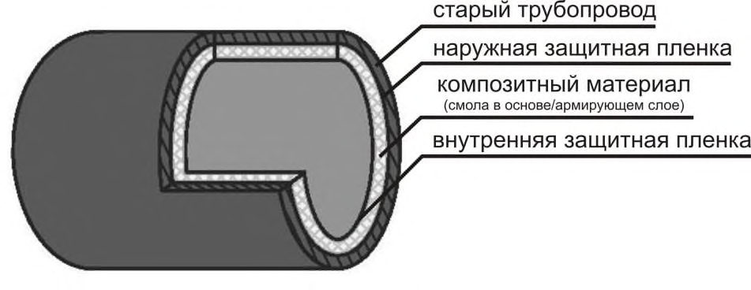
Примечание - В зависимости от системного решения пленки применяются как вспомогательный материал при монтаже или как часть композиции.
При изготовлении гибкого полимерного рукава могут применяться специальные добавки и инертные наполнители.
Система реакционных смол и основа определяют характеристики новой трубы. Наличие остальных элементов в конструкции обусловлено спецификой техники монтажа.
При изготовлении основы применяют стекловолокно и/или полимерные волокна. Допускается применение в одном рукаве разных волокон.
6.6.1 Основа из стекловолокна
Для изготовления гибких полимерных рукавов, а также ламинатов для локального ремонта трубопровода следует применять исключительно устойчивое к кислотным нагрузкам алюмосиликатное стекловолокно, обогащенное оксидом кальция (типа E-CR).
При применении в качестве основы материалов из стекловолокна следует предусматривать в структуре рукава внутренний защитный слой из реакционной смолы толщиной минимум 1 мм, предохраняющий внутреннюю поверхность рукава от истирания. Толщина слоя определяется в зависимости от результатов тестирования рукава на истираемость.
6.6.2 Основа из полимерных волокон
Для изготовления основы из полимерных волокон применяются нити из полиамида (РА), полиакрилонитрила (РАN), полиэтилентерефталата (РЕТ), полиэтиленнафталата (РЕN), полипропилена (РР) и их комбинации. Ввиду высокой гибкости и слабой адгезии с реакционными смолами основы из полимерных волокон не обладают упрочняющими свойствами.
6.6.3 Системы реакционных смол
При изготовлении гибких полимерных рукавов применяются ненасыщенные полиэфирные смолы (UP), эпоксидные смолы (EP) и винил-эфирные смолы (VE).
Система реакционных смол оказывает влияние на следующие характеристики новой трубы:
- герметичность; жесткость;
- прочность;
- химическая стойкость;
- гидравлические свойства;
- устойчивость к истиранию;
- устойчивость к водной струйной очистке.
10. Выбор системы смол для применения в системах водоотведения следует подтверждать результатами испытаний изготовителя или независимых аккредитованных лабораторий.
Таблица 2 - Рекомендации по выбору систем реакционных смол, в зависимости от типа сточных вод
| Вид сточных вод | Рекомендуемые системы реакционных смол | Рекомендуемые системы реакционных смол | Рекомендуемые системы реакционных смол |
|---|---|---|---|
| Слабоагрессивные и неагрессивные сточные воды | Ненасыщенные полиэфирные смолы Плотность: 1,2 г/см³ ; температура стеклования: более 120°С; прочность на изгиб не менее 70 Н/мм² ; прочность на растяжение не менее 30 Н/мм² ; удлинение при разрыве: ≤ 2%; модуль эластичности: 3500 Н/мм² | Ненасыщенные полиэфирные смолы Плотность: 1,2 г/см³ ; температура стеклования: более 120°С; прочность на изгиб не менее 70 Н/мм² ; прочность на растяжение не менее 30 Н/мм² ; удлинение при разрыве: ≤ 2%; модуль эластичности: 3500 Н/мм² | Ненасыщенные полиэфирные смолы Плотность: 1,2 г/см³ ; температура стеклования: более 120°С; прочность на изгиб не менее 70 Н/мм² ; прочность на растяжение не менее 30 Н/мм² ; удлинение при разрыве: ≤ 2%; модуль эластичности: 3500 Н/мм² |
| Состав смол | Состав смол | Состав смол | |
| гликоли | кислоты | максимальная массовая доля стирола,% | |
| Этиленгликоль 1,2 - Пропиленгликоль Диэтиленгликоль Дипропиленгликоль Бутандиол 1,3 Бутандиол 1,4 | Изофталевая кислота | 50 |
Окончание таблицы 2
| Вид сточных вод | Рекомендуемые системы реакционных смол | Рекомендуемые системы реакционных смол | Рекомендуемые системы реакционных смол |
|---|---|---|---|
| Хозяйственно-бытовые сточные воды | Ненасыщенные полиэфирные смолы Плотность: 1,2 г/см³ ; температура стеклования: более 120°С; прочность на изгиб не менее 70 Н/мм² ; прочность на растяжение не менее 30 Н/мм² ; удлинение при разрыве: ≤ 2%; 2 | Ненасыщенные полиэфирные смолы Плотность: 1,2 г/см³ ; температура стеклования: более 120°С; прочность на изгиб не менее 70 Н/мм² ; прочность на растяжение не менее 30 Н/мм² ; удлинение при разрыве: ≤ 2%; 2 | Ненасыщенные полиэфирные смолы Плотность: 1,2 г/см³ ; температура стеклования: более 120°С; прочность на изгиб не менее 70 Н/мм² ; прочность на растяжение не менее 30 Н/мм² ; удлинение при разрыве: ≤ 2%; 2 |
| Состав смол | Состав смол | Состав смол | |
| гликоли | кислоты | максимальная массовая доля стирола,% | |
| Неопентилгликоль | Ортофталевая кислота | 50 | |
| Эпоксидные смолы Плотность: 1,2 г/см³ ; прочность на изгиб не менее 100 Н/мм² ; ударная вязкость не менее 10 - 12 кДж/м² ; ударная вязкость с надрезом не менее 1,5 кДж/м² | Эпоксидные смолы Плотность: 1,2 г/см³ ; прочность на изгиб не менее 100 Н/мм² ; ударная вязкость не менее 10 - 12 кДж/м² ; ударная вязкость с надрезом не менее 1,5 кДж/м² | Эпоксидные смолы Плотность: 1,2 г/см³ ; прочность на изгиб не менее 100 Н/мм² ; ударная вязкость не менее 10 - 12 кДж/м² ; ударная вязкость с надрезом не менее 1,5 кДж/м² | |
| Прочность на сжатие: 110 - 120 Н/мм² ; прочность на растяжение не менее 50 Н/мм² ; удлинение при разрыве: ≤ 5% - 10%; модуль эластичности: 4000 Н/мм² | Прочность на сжатие: 110 - 120 Н/мм² ; прочность на растяжение не менее 50 Н/мм² ; удлинение при разрыве: ≤ 5% - 10%; модуль эластичности: 4000 Н/мм² | Прочность на сжатие: 110 - 120 Н/мм² ; прочность на растяжение не менее 50 Н/мм² ; удлинение при разрыве: ≤ 5% - 10%; модуль эластичности: 4000 Н/мм² | |
| Промышленные сточные воды | Винилэфирные смолы Плотность: 1,2 г/см³ ; температура стеклования: более 120°С; прочность на изгиб не менее 70 Н/мм² ; прочность на растяжение не менее 30 Н/мм² ; удлинение при разрыве: ≤ 2%; модуль эластичности: 3500 Н/мм² | Винилэфирные смолы Плотность: 1,2 г/см³ ; температура стеклования: более 120°С; прочность на изгиб не менее 70 Н/мм² ; прочность на растяжение не менее 30 Н/мм² ; удлинение при разрыве: ≤ 2%; модуль эластичности: 3500 Н/мм² | Винилэфирные смолы Плотность: 1,2 г/см³ ; температура стеклования: более 120°С; прочность на изгиб не менее 70 Н/мм² ; прочность на растяжение не менее 30 Н/мм² ; удлинение при разрыве: ≤ 2%; модуль эластичности: 3500 Н/мм² |
| Состав смол | Состав смол | Состав смол | |
| гликоли | кислоты | максимальная массовая до- ля стирола,% | |
| Фенакрилатные смолы | Акриловые и метакрило- вые кислоты | 50 | |
| Эпоксидные смолы Допускаются к применению в случае подтвержденных результатов испытаний | Эпоксидные смолы Допускаются к применению в случае подтвержденных результатов испытаний | Эпоксидные смолы Допускаются к применению в случае подтвержденных результатов испытаний |
6.10Защитные пленки и покрытия
Внутренняя пленка/покрытие предназначена для изоляции смолы от жидкости, которая применяется для инверсии рукава или его установки.
Внутренняя пленка/покрытие оказывает влияние на следующие характеристики новой трубы: герметичность; химическую устойчивость; гидравлические свойства; устойчивость к истиранию.
Наружная пленка/покрытие предохраняет рукав от загрязнения/ вымывания грунтовыми водами смолы; предохраняет грунтовые воды от загрязнения.
Пленки/покрытия должны изготавливаться из устойчивых к коррозии материалов: полиамида (РА), полиэтилена (РЕ), полипропилена (РР), полиуретана (PUR). Исключение составляют пленки, применяемые в качестве вспомогательных материалов при монтаже.
7Правила планирования работ
При этом фиксируются:
- смещения труб;
- число примыканий;
- наличие внутри трубопровода корней растений;
- источники инфильтрации грунтовых вод;
- наличие препятствий транспортированию сточных вод;
- места разрушения трубопровода;
- отводы.
- местоположение, глубину прокладки, геометрические размеры, конструкционный материал и уклон восстанавливаемого трубопровода, наличие изменений внутреннего диаметра, наличие изменений направления транспортирования сточных вод;
- вид, свойства, химический состав, температуру сточных вод;
- объем сточных вод, отведение которых необходимо обеспечить при производстве работ и прочие необходимые условия производства работ;
- геологические и гидрологические условия производства работ; характеристику грунтовых вод; расположение грунтовых вод относительно лотка;
- местоположение, размеры, форму конструкционные материалы смотровых колодцев и других канализационных сооружений; подъездные пути; доступность;
- характеристику, размеры, число восстанавливаемых интервалов, класс состояния системы «старая труба-грунт», необходимые подготовительные работы;
- ограничения на производство работ.
- разработать концепцию (схему) организации дорожного движения в месте производства работ и согласовать ее с ГИБДД;
- оценить состояние существующего трубопровода перед началом восстановительных работ;
- разработать концепцию восстановления трубопровода (этапы производства работ, перечень применяемых технологий и материалов, план-график производства работ);
- определить требования к подготовительным работам (очистке, ликвидации препятствий движению сточных вод и т.д.);
- обеспечить безопасное производство работ;
- организовать временную систему водоотведения сточных вод;
- согласовать вид, методы и объем контрольных мероприятий, направленных на обеспечение качества производства работ.
- объем подготовительных работ (погонные метры или число локальных участков);
- очистку трубопровода, пог. м;
- визуальное обследование, пог. м;
- устранение препятствий транспортированию сточных вод (часы);
- устранение препятствий транспортированию сточных вод (количество). Основной критерий: размер и материал препятствий;
- определение координат примыканий (количество примыканий);
- используемые технологии для каждого интервала (погонные метры). Критерий выбора технологии, размеры восстанавливаемого интервала, статические нагрузки, используемые материалы. При использовании гибких полимерных рукавов при необходимости указать производителя и технологию отверждения; - герметизация присоединений бестраншейным способом (количество); - герметизация примыканий к колодцам (количество); - устройство лотковой части смотровых колодцев (количество). 7.6 Возможность применения определенных технологических решений для восстановления самотечных трубопроводов с применением гибких полимерных рукавов зависит от: - параметров восстанавливаемого трубопровода (условного диаметра, Dу, длины восстанавливаемого интервала, уклона, профиля трубопровода); - картины повреждений; - технологии отверждения рукава; - возможности отведения сточных вод; - доступности восстанавливаемого интервала. 7.7 Гибкие полимерные рукава могут применяться для восстановления проходных и непроходных трубопроводов наиболее распространенных сечений (круговых, овоидальных, зевообразных или овальных) независимо от вида применяемых при их строительстве конструкционных материалов. Гибкие полимерные рукава можно применять для восстановления трубопровода если: - старый трубопровод обладает статической прочностью; - деформации сечения не более 5%; - отсутствии препятствий транспортированию сточных вод. 7.8 При больших деформациях, смещениях труб и наличии раскрытых трещин различной конфигурации (продольные, поперечные, винтообразные и т.д.) на внутренней поверхности труб применять гибкие полимерные рукава можно только после анализа системы «старая труба-грунт». При наличии внутри восстанавливаемого интервала препятствий транспортированию сточных вод, их необходимо устранить. При обнаружении провалов и разрушений трубы необходима локальная заме- на трубопровода в местах повреждений. Восстановление трубопровода производится поинтервально - от колодца к колодцу.
При восстановлении трубопроводов следует применять материалы и технические решения, допущенные к решению этих задач.
Для этого должны быть предоставлены следующие данные:
- описание системы смол;
- описание материалов, примененных при изготовлении гибкого полимерного рукава;
- правила монтажа гибкого полимерного рукава и перечень применяемого технологического оборудования с предоставлением сертификатов соответствия, предусмотренных законодательством;
- область применения гибкого полимерного рукава;
- прочностные параметры композиционного материала (модуль эластичности, прочность на изгиб);
- результаты проверки рукава на устойчивость к водной струйной очистке;
- результаты испытаний рукава на устойчивость к сточным водам;
- степень воздействия композиционного материала на окружающую среду.
По требованию заказчика предоставляются для ознакомления протоколы измерения механических характеристик композиционного материала и результаты отдельных испытаний, проведенные в лаборатории изготовителя рукава или в независимой аттестованной лаборатории.
7.10Определение минимальной толщины стенки нового трубопровода
Для обеспечения безаварийной эксплуатации восстановленного трубопровода необходимо на основании статических расчетов определить минимально допустимую толщину стенки новой трубы.
Расчеты проводятся исходя из предполагаемого срока эксплуатации восстановленного трубопровода не менее 50 лет, требуемого значения кольцевой жесткости SL , затвердевшего рукава:
, где EL - прогнозное значение модуля эластичности (через 50 лет) затвердевшего рукава;
SL - толщина стенки рукава, мм; rL - средний радиус рукава, мм.
Прежде всего, определяется состояние системы «старая труба - грунт».
- класс состояния 1 (рисунок 2) - старая труба обладает несущими свойствами, трещины отсутствуют. Наблюдаются волосяные трещины (ширина менее 0,15 мм). Для железобетонных труб максимально допустимая ширина трещины - 0,3 мм. Картина повреждений: стыки труб не герметичны, внутри трубы наблюдаются мелкие повреждения, результат которых - инфильтрация грунтовых вод.
- класс состояния 2 (рисунок 3) - система «старая труба - грунт» обладает несущими свойствами. Картина повреждений: наличие продольных трещин длиной не менее 30 см, овальность не более 5%.
- класс состояния 3 (рисунок 4) - статическая устойчивость системы «старая труба - грунт» в течение срока эксплуатации (50 лет) не гарантируется, сильная овальность. В случае монтажа рукава, он должен выдерживать воздействие грунта и нагрузки, обусловленные движением транспорта.
Гибкие полимерные рукава можно применять без ограничений для санации систем «старая труба - грунт» классов состояния 1 и 2.
В восстанавливаемом интервале допускается наличие:
- кольцевых трещин и щелей шириной менее 0,1 Ду, мм, но не более 10 SL мм;
- вертикальных и осевых не более 0,1 Ду, мм, смещений стыков. h - толщина слоя грунта; s - толщина стенки старого трубопровода;
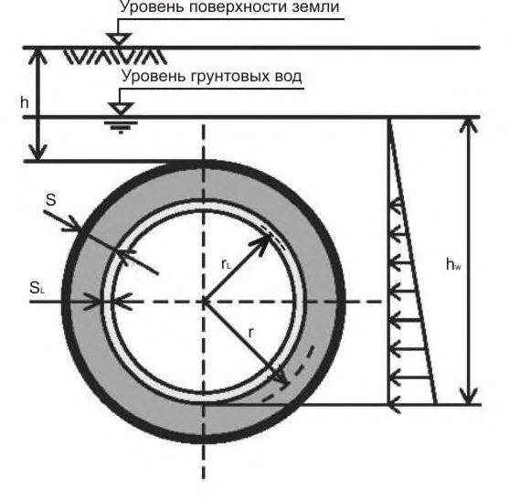
sL - толщина стенки гибкого полимерного рукава rL
- радиус гибкого полимерного рукава r - радиус старого трубопровода hw - расположение грунтовых вод относительно лотка восстанавливаемого трубопровода
Рисунок 2 - Система «старая труба - грунт». Класс состояния 1
Рисунок 3 - Система «старая труба - грунт». Класс состояния 2
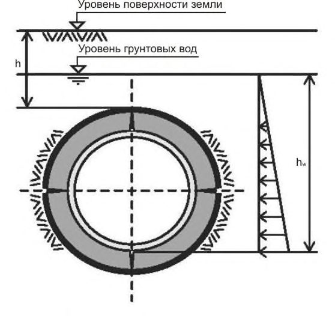
Рисунок 4 - Система «старая труба - грунт». Класс состояния 3
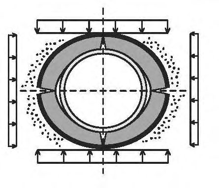
Таблица 3
| Группа гибких полимерных рукавов | Прогнозные значения механических характеристик композиционных материалов, образующихся при отверждении гибких полимерных рукавов через 50 лет | Прогнозные значения механических характеристик композиционных материалов, образующихся при отверждении гибких полимерных рукавов через 50 лет |
|---|---|---|
| модуль эластичности, Н/мм² | предел прочности при изгибе, Н/мм² | |
| Гибкие полимерные рукава на основе полимерных волокон | Гибкие полимерные рукава на основе полимерных волокон | Гибкие полимерные рукава на основе полимерных волокон |
| 1 | 1000 | 23 |
| 2 | 1500 | 31 |
| 3 | 1400 | 14 |
| 4 | 1400 | 16 |
| 5 | 1400 | 18 |
| 6 | 1500 | 17 |
| 7 | 1500 | 18 |
| Гибкие полимерные рукава на основе стекловолокна | Гибкие полимерные рукава на основе стекловолокна | Гибкие полимерные рукава на основе стекловолокна |
| 8 | 3500 | 75 |
| 9 | 4000 | 80 |
| 10 | 4500 | 85 |
| 11 | 5000 | 90 |
| 12 | 5500 | 95 |
| 13 | 6000 | 100 |
| 14 | 6500 | 105 |
| 15 | 7000 | 110 |
| 16 | 7500 | 115 |
| 17 | 8000 | 120 |
| 18 | 8500 | 125 |
| 19 | 9000 | 130 |
| 20 | 9500 | 135 |
8Пропитка гибких полимерных рукавов при восстановлении самотечных трубопроводов
- наименование рукава;
- точное обозначение рецептуры реакционных смол или ее модификации;
- толщина стенки полимерного рукава;
- внутренний диаметр восстанавливаемого трубопровода или гидравлический диаметр профилей, отличных от кругового;
- дата пропитки рукава;
- длина рукава.
До начала монтажных работ пропитанный рукав должен храниться в соответствии с рекомендациями изготовителя. Его следует предохранять от самопроизвольного начала реакции отвердения.
8.2Пропитка гибких рукавов на строительной площадке
- наличием в системе вакуумного насоса;
- устойчивыми к механическим нагрузкам калибровочными валками для обеспечения равномерной толщины стенок рукава;
- соответствием установки требованиям, предъявляемым к промышленному оборудованию.
9Методы отверждения гибких полимерных рукавов
- нагреваемой воды;
- водяного пара;
- ультрафиолетового излучения.
10Требования к подрядной организации
11Правила производства работ
11.1Общая информация
11.1.2Технология производства работ должна быть подробно (пооперационно) изложена в правилах монтажа рукава. Персонал подрядчика должен пройти обучение по монтажу применяемого при восстановительных работах рукава. Руководство по монтажу рукава - неотъемлемая часть системы обеспечения качества производства работ.
11.2Устройство строительной площадки, охрана труда
11.2.2Перед началом работ по монтажу гибкого полимерного рукава заказчик, не позже, чем за три дня, в письменной форме, уведомляет собственников зданий и предприятий, руководство заинтересованных служб и население о сроках производства работ.
- взрывоопасную атмосферу в трубопроводе;
- токсичные вещества;
- электрические установки;
- автоматические установки;
- возможный прорыв грунтовых вод;
- опасные для здоровья материалы.
11.3Допуск подрядчика к производству работ
- рассматриваются общие вопросы выполнения работ;
- утверждается план-график производства работ и, при необходимости, отдельных этапов;
- устанавливаются сроки предоставления документов, подтверждающих соответствие качества выполнения работ действующим нормам и правилам;
- согласовывается организация строительной площадки;
- согласовывается организация движения транспорта в месте производства работ/требования к организации движения транспорта;
- принимается решение о производстве работ в ночное время (в случае необходимости);
- проверяется наличие разрешения на производство работ с высоким уровнем шума (в исключительных случаях);
- обсуждается состояние восстанавливаемого трубопровода;
- согласовывается организация водоотведения на участке производства работ;
- согласовываются объемы подземных работ (при их наличии);
- утверждается проект производства работ по монтажу гибкого полимерного рукава (определяются колодцы, через которые будет производиться монтаж рукава (-ов); исполнителем предоставляются схемы производства работ);
- проверяется обеспечение строительной площадки водой и электроэнергией;
- проверяется наличие взаимодействия с заинтересованными службами и организациями;
- устанавливаются места отбора проб;
- рассматриваются вопросы организации оказания медицинской помощи и соблюдения пожарной безопасности;
- рассматриваются вопросы соблюдения техники безопасности при производстве работ;
- согласовываются способы утилизация примененной воды.
11.4Согласования и разрешения
- планы-графики производства работ отдельных этапов;
- схемы водоотведения сточных вод, разработанные исполнителем.
11.5Правила производства подготовительных работ
Поэтому, перед началом работ необходимо обеспечить перекачку сточных вод или временно перекрыть их поступление (рисунок 5). Только в этом случае возможно качественное выполнение работ.
Все сооружения для перекачки и водоотведения сточных вод должны быть герметичными, обладать необходимой пропускной способностью и необходимыми прочностными характеристиками, чтобы безопасно выполнять свои функции.
Бесперебойная эксплуатация сооружений для перекачки и водоотведения сточных вод, насосов, трубопроводов и гибких рукавов должна быть гарантирована подрядчиком на все время производства восстановительных работ. Выполнение этого требования предполагает регулярный контроль функционирования систем, наличие системы сигнализации и аварийного отключения, а также надлежащее обслуживание применяемых агрегатов.
Для удаления наростов можно применять робототехнику. Технологию очистки необходимо выбирать таким образом, чтобы исключить повреждение трубопровода в процессе очистки.
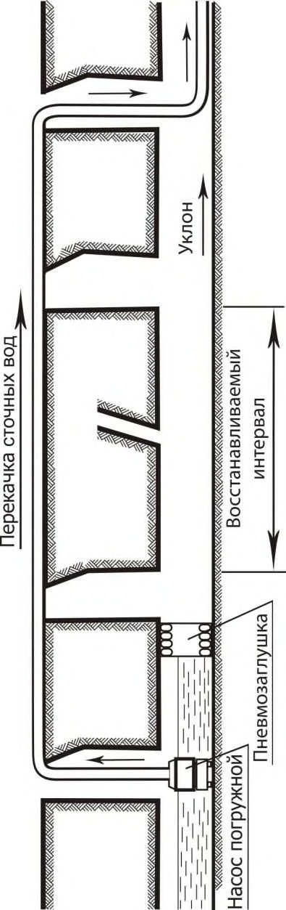
Рисунок 5 - Подготовительные работы. Устройство водоотведения
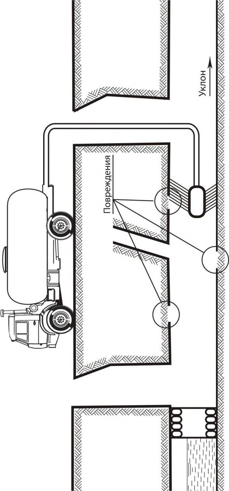
Рисунок 6 - Подготовительные работы. Очистка и промывка восстанавливаемого интервала
Результаты обследования трубопровода подрядчик должен сравнить с данными конкурсной документации. В случае выявлении серьезных различий между фактическим состоянием трубопровода и картиной повреждений, отраженной в конкурсной документации, которые могут повлечь изменение объемов выполняемых работ, подрядчик должен незамедлительно поставить об этом в известность заказчика.
Если в результате визуального обследования трубопровода выявлена необходимость устранения препятствий движению сточных вод или производства локального ремонта, то эти факты отражаются в итоговом протоколе обследования.
Объем работ по устранению препятствий движению сточных вод согласуется заказчиком и подрядчиком перед началом работ и тщательно документируется.
Объем выполняемых работ должен быть согласован с заказчиком.
Герметичность трубопровода должна сохраняться до окончания монтажных работ.
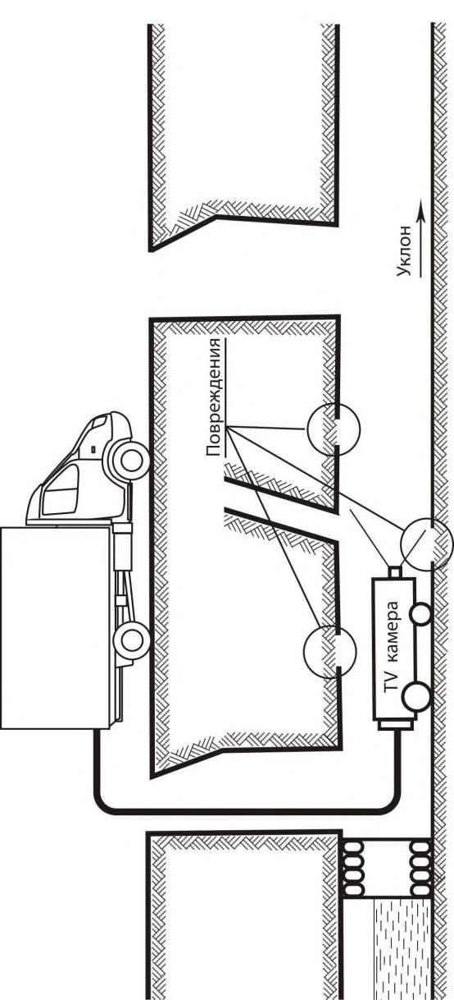
Результаты измерения внутреннего диаметра трубопровода вдоль санируемого интервала фиксируются в протоколе измерений. Протокол измерений - основание для оформления заказа на изготовление гибкого полимерного рукава.
В качестве дополнительных работ измеряют диаметр (длину окружности) трубопровода в местах примыканий к колодцам.
11.6Правила монтажа гибкого полимерного рукава
- очистку трубопровода перед началом монтажных работ . Непосредственно перед монтажом гибкого полимерного рукава производится его очистка водой под высоким давлением с применением специальных насадок (рисунок 6). Технология очистки должна обеспечивать достоверную оценку состояния трубопровода;
- визуальное обследование трубопровода перед началом монтажных работ. Цель обследования - подтверждение того, что восстанавливаемый интервал полностью и качественно очищен и при проведении монтажных работ пропитанный рукав не будет поврежден посторонними предметами (рисунок 7). Результаты обследования обязательно фиксируются на электронных носителях информации;
- получение разрешения заказчика на производство работ. Заблаговремен- но, до начала монтажных работ, заказчику предоставляются все согласования и разрешения, акты сдачи-приемки предписанных подготовительных работ, товарнотранспортные и сопроводительные документы на гибкий полимерный рукав. На основании представленных документов и проверки строительной площадки заказчик выдает разрешение на начало монтажных работ. Представители заказчика, курирующие работы по восстановлению трубопровода в процессе монтажных работ должны находиться на строительной площадке;
- позиционирование гибкого полимерного рукава в трубопроводе. Технологии восстановления трубопроводов с применением гибких полимерных рукавов в основном отличаются способом позиционирования рукава в трубопроводе. Различают: позиционирование рукава методом «инверсии» (рисунки 8, 9); втягивание рукава с применением специальных лебедок (рисунки 10, 11, 12); комбинацию втягивания и инверсии (рисунок 13).
Для позиционирования рукава, в зависимости от применяемой технологии, применяют воду или воздух. При этом внутреннее давление этих сред нужно выбирать таким образом, чтобы при возможном воздействии грунтовых вод полимерный рукав плотно прилегал к внутренней поверхности восстанавливаемого трубопровода. Значение внутреннего давления воды (воздуха) должно превышать возможное давление грунтовых вод.
Давление, которое прижимает рукав к внутренней поверхности трубопровода, в течение всего процесса отвердения должно оставаться постоянным и обеспечивать необходимую форму и толщину стенки ламината. Следует исключить попадание воздуха или влаги вовнутрь ламината.
При монтаже следует предохранять рукав от механических повреждений. Для этого при втягивании рукава в восстанавливаемый трубопровод необходимо:
- проложить в лотковой части трубопровода специальную пленку, обеспечивающую быстрое и безопасное перемещение сложенного рукава;
- втягивать рукав с постоянным усилием, значение которого не превышает максимально допустимого, установленного изготовителем рукава;
- обеспечить измерение и регистрацию значений втягивающих усилий.
Примечание - Максимально допустимая высота подъема рукава краном определяется массой рукава и максимально допустимым тяговым усилием. Значение максимально допустимого тягового усилия следует рассчитывать применительно к каждому конкретному случаю. Следует избегать образования перетяжек при подъеме/опускании рукава.
Рисунок 8 - Монтаж гибкого полимерного рукава методом «инверсии»
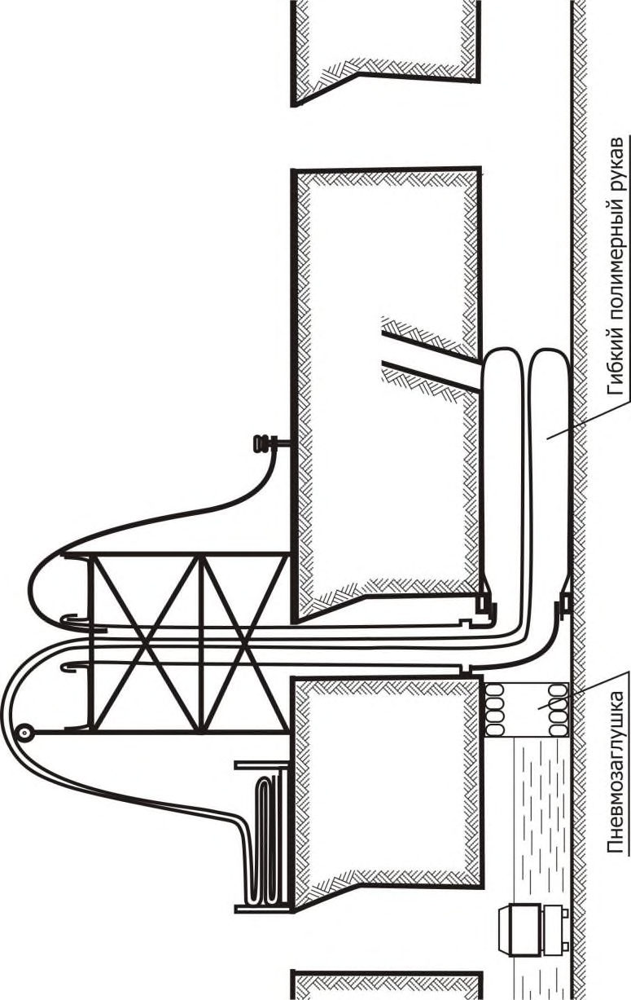
Рисунок 9 - Монтаж гибкого полимерного рукава с применением инверсионного барабана
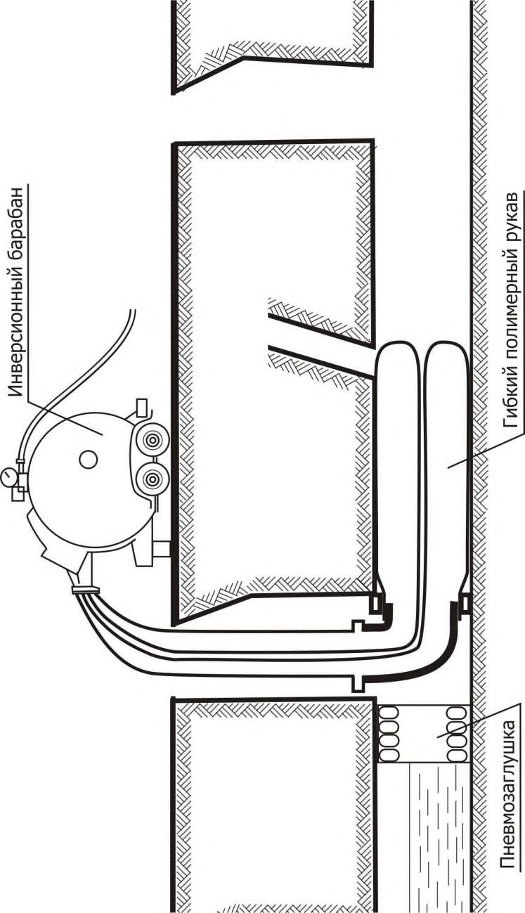
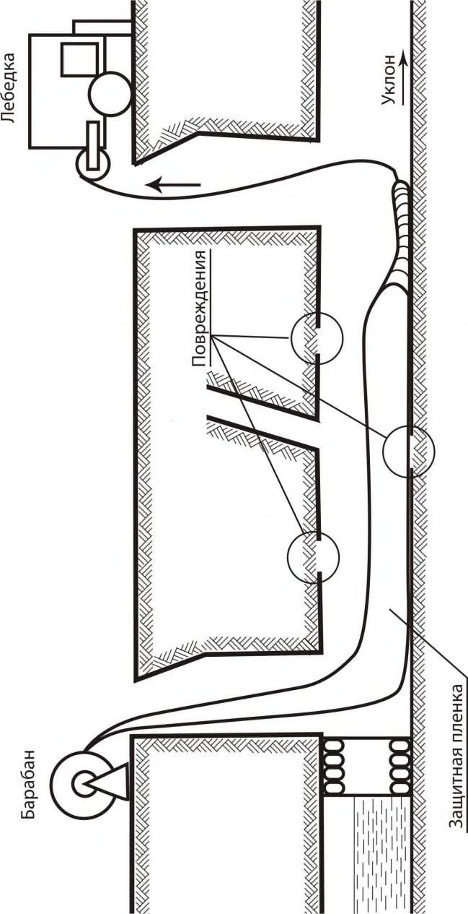
Рисунок 10 - Монтаж гибких полимерных рукавов, отверждаемых УФ - излучением. Втягивание защитной пленки
Рисунок 11 - Монтаж гибких полимерных рукавов, отверждаемых УФ - излучением. Втягивание рукава
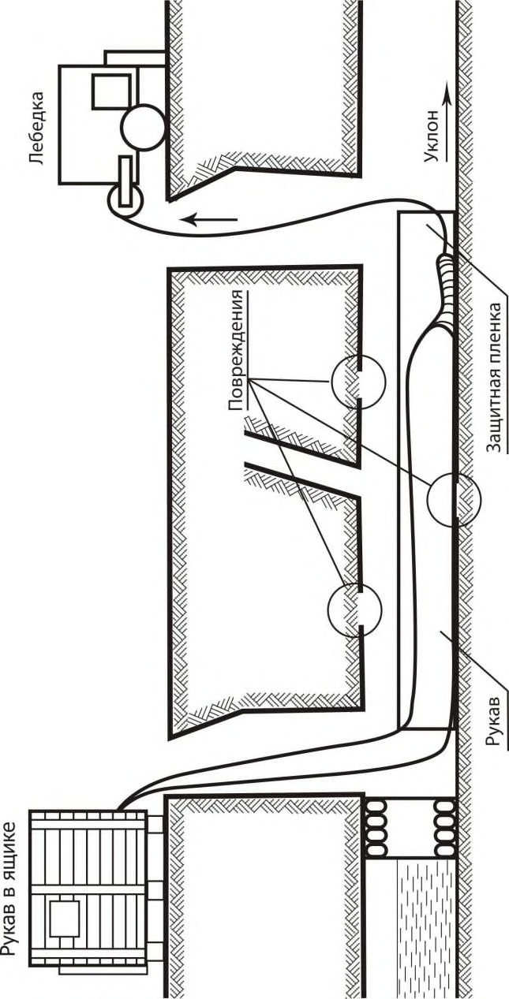
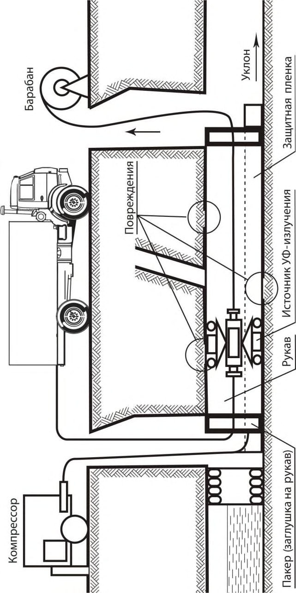
Рисунок 12 - Монтаж гибких полимерных рукавов, отверждаемых УФ - излучением.
Позиционирование рукава с помощью сжатого воздуха
Рисунок 13 - Монтаж гибкого полимерного рукава комбинированным способом
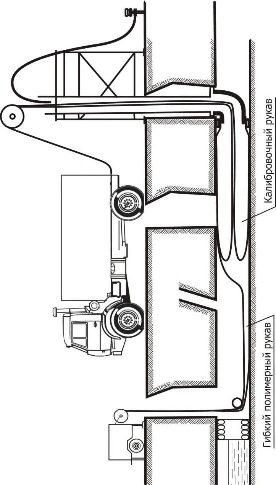
Параметры процесса отвердения фиксируются в отдельном протоколе. В зависимости от применяемой технологии отвердения должны выполняться следующие действия.
11.6.2.1 Отверждение с применением горячей воды:
- автоматическое измерение и регистрация высоты водяного столба;
- автоматическое измерение и регистрация температуры на поверхности рукава в промежуточных и конечном колодцах с периодичностью в 30 мин. Измерения проводятся в сводной и лотковой части (шелыге/лотке) рукава. Допускается измерять температуру с применением тарированных ручных измерителей температуры;
- регистрация в режиме реального времени температуры исходящего и входящего потоков воды, применяемой при отверждении рукава и датчика температуры во входном колодце.
11.6.2.2 Отверждение с применением водяного пара:
- автоматическое измерение и регистрация температуры на поверхности рукава в промежуточных и конечном колодцах с периодичностью в 30 мин. Измерения проводятся в сводной и лотковой части (шелыге/лотке) рукава. Допускается измерять температуру с применением тарированных ручных измерителей температуры;
- регистрация в режиме реального времени температуры пара на выходе парогенератора;
- регистрация в режиме реального времени температуры пара на выходе отверждаемого рукава;
- измерение и регистрация давления внутри рукава;
- обеспечение отвода конденсата из рукава в течение процесса отверждения.
11.6.2.3 Отвердение с применением ультрафиолетового (УФ) излучения:
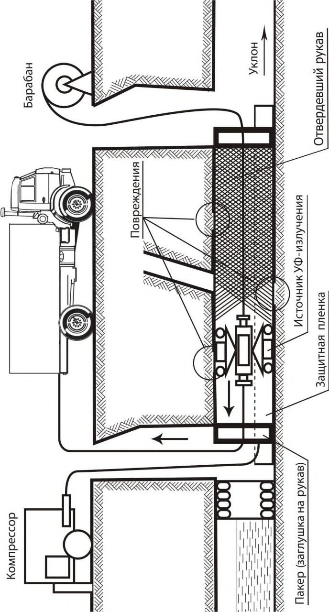
- при низких температурах окружающей среды следует обеспечить подогрев воздуха в месте производства работ. Следовать рекомендациям поставщика рукава;
- автоматическая регистрация скорости перемещения источника УФизлучения, режима работы источников излучения (вкл/выкл), а также внутреннего давления в рукаве;
- автоматическое измерение и регистрация изменений температуры на внешней поверхности рукава в процессе перемещения цепочки источников УФ-излучения;
- подрядчик собственными силами контролирует соответствие источников УФизлучения паспортным характеристикам. Для этого через 400 ч эксплуатации источника УФ-излучения, проводится сравнение характеристик находившегося в эксплуатации источника с эталоном. Последующие проверки проводятся через каждые 150 ч эксплуатации. Источник УФ-излучения подлежит замене при уменьшении мощности излучения более чем на 30%, по сравнению с эталоном.
Перед началом работ подрядчик должен предъявить документацию на источники УФ-излучения, содержащую:
- серийный номер источника УФ-излучения;
- дату первого применения;
- срок эксплуатации;
- даты проведения контрольных измерений;
- результаты контрольных измерений;
- параметры эталонного источника УФ-излучения;
- отклонение параметров источника УФ-излучения от эталона, %;
- идентификационные данные эталона.
После завершения процесса отвердения рукава внутренняя пленка, не являющаяся компонентом композиционного материала, должна быть полностью удалена;
11.6.3.1 В каждом случае между заказчиком и подрядчиком должны быть определены: время и место отбора проб; технология заделки поврежденного участка; число и маркировка проб и архивных образцов. 11.6.3.2 Пробы должны храниться при температуре окружающей среды до момента проведения испытаний, чтобы не стимулировать дальнейшее отвердение рукава. Если для отвердения рукава применялось ультрафиолетовое излучение, то пробы должны упаковываться в светонепроницаемую упаковку. 11.6.3.3 Каждому восстановленному интервалу должна соответствовать отдельная проба, которая выполняет функцию репрезентативной пробы для соответствующего интервала. На пробе указываются: местонахождение строительной площадки; дату отбора пробы; код колодца; код санируемого интервала. Пробу подписывают представители заказчика и подрядчика. Протокол отбора проб оформляется на строительной площадке, подписывается представителями заказчика и подрядчика и передается вместе с пробой (-ами) заказчику. Место отбора проб определяется заказчиком заранее. Сначала отбор проб производится в колодце. Если первая проба не соответствует установленным требованиям, то производится отбор проб непосредственно внутри интервала. Характеристики этих проб, в дальнейшем, являются определяющими. Места отбора проб внутри восстановленного интервала должны быть отремонтированы с применением технологий, обеспечивающих восстановление поврежденной поверхности на толщину стенки, герметичность рукава и длительную эксплуатацию. Минимальный размер пробы: - длина пробы: 20 × sL ; - ширина пробы: 35 см по оси рукава; - для проведения испытаний на склонность к ползучести длина образца должна составлять минимум 40 см; - допускается разделение пробы на кусочки шириной 50 мм без изменения длины; - для измерения кольцевой жесткости применяется кольцо шириной не менее
40 см.
11.7Заключительные работы
11.7.1 Заключительные работы
В перечне выполняемых работ должно быть указано, на каком этапе проводится проверка восстановленного трубопровода на герметичность (рисунок 15).
Если проводится проверка на герметичность рукавов, конструкция которых не предусматривает применения в процессе эксплуатации внутренней пленки, то необходимо осуществить проверку на герметичность отдельной пробы.
Для этих рукавов оба испытания должны быть успешными. Интегрированные элементы конструкции рукава в процессе испытаний не должны повреждаться.
Проверка должна проводиться по окончании процесса отвердения рукава и перед раскрытием примыканий. При проверке на герметичность должен присутствовать представитель заказчика.
11.7.2 Раскрытие примыканий
Непосредственно после проверки рукава на герметичность следует раскрыть примыкания и произвести их герметизацию (рисунок 16). По завершении этих работ производится сдача восстановленного интервала в эксплуатацию.
11.7.3 Герметизация примыканий
В правилах монтажа гибких полимерных рукавов изготовителем должна быть указана технология, применяемая для герметизации примыканий.
Примыкания герметизируют методом запрессовки специальных (рисунок 17) полимерных композиций или с применением шляпообразных вставок/манжет (рисунок 18), или, при санации проходных трубопроводов, ламинированием вручную.
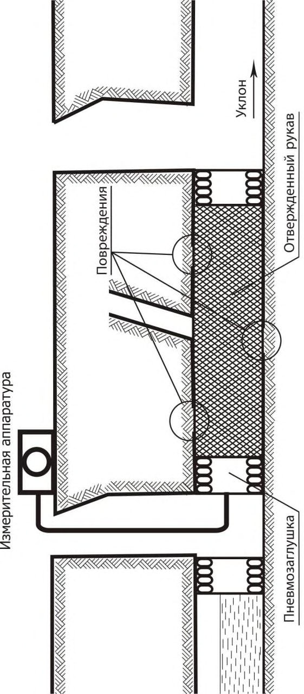
Рисунок 15 - Монтаж гибких полимерных рукавов, отверждаемых УФ - излучением.
Проверка рукава на герметичность
Рисунок 16 - Заключительные работы. Раскрытие примыканий с помощью робототехники
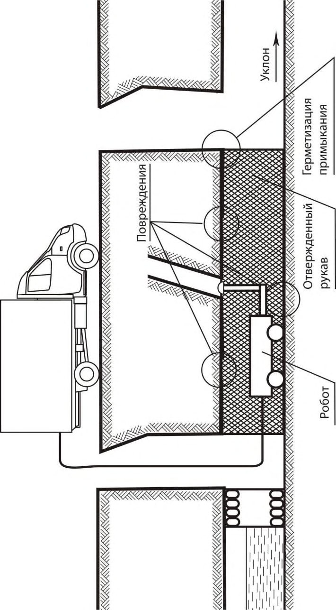
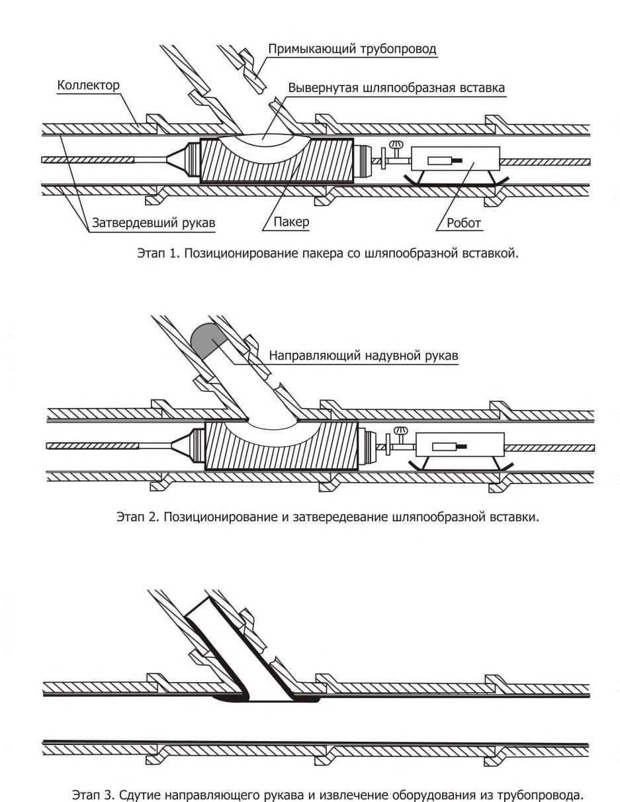
Рисунок 18 - Заключительные работы. Монтаж Т-образной манжеты
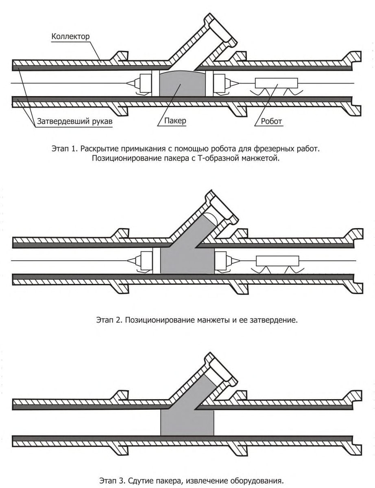
Способ герметизации примыканий зависит от конструкции рукава. После отверждения рукава производится раскрытие врезок изнутри (в непроходных трубопроводах эти работы производятся с применением специальных роботов).
Для герметизации примыканий применяют следующие технологии:
- шпаклевание/запрессовку;
- ламинирование;
- монтаж шляпообразных вставок/манжет (рисунки 19, 20).
Шляпообразные вставки/манжеты изготавливаются преимущественно из искусственного войлока, стекловолокна или других подобных устойчивых к коррозии материалов. В результате образуется новая труба, перекрывающая первый стык примыкания на 150 мм.
Шляпообразные вставки (таблица 4) монтируются изнутри непроходных трубопроводов. Поля вставки (минимальная ширина 50 мм) фиксируются на новой композиционной трубе, а отвод с помощью специального робота монтируется в примыкающем трубопроводе.
Таблица 4 - Классификация шляпообразных вставок
| Класс | Минимальная длина а в примыкающем трубопроводе |
|---|---|
| А | 1000 мм или до точки над уровнем грунтовых вод ( в зависимости от того, что располага- ется выше) |
| В | 400 мм. Минимум 150 мм над первым стыком примыкающего трубопровода |
| С | 50 мм |
Шляпообразные вставки должны обеспечивать жесткое соединение между трубопроводом и примыканием (механическое сцепление или приклеивание) и выдерживать эксплуатационные нагрузки, прежде всего водную струйную очистку.
Переходы между шляпообразной вставкой и новой трубой должны быть плавными и гладкими, чтобы избежать образования засоров при эксплуатации и обслуживании.
Герметизация примыканий должна производиться после завершения реакционных процессов, влияющих на геометрические размеры рукава. При отверждении рукава, обусловленном воздействием тепла (горячая вода, пар), герметизацию примыканий следует производить не ранее, чем через три недели после производства монтажных работ.
Рисунок 20 - Т-образная манжета
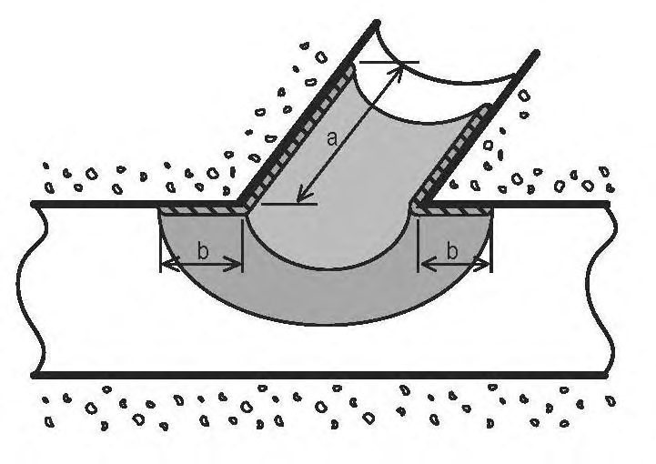
Объект герметизации необходимо тщательно подготовить к производству работ. Подготовка включает в себя полное раскрытие примыкания с соблюдением угла наклона и внутреннего диаметра примыкания, ошкуривание внутренней поверхности рукава в местах нанесения клеевого состава и тщательную очистку поверхности перед нанесением клея.
Результатом работ должно быть прочное, герметичное примыкание. Кольцевые щели должны быть заделаны, дабы исключить проникновение грунтовых вод.
После завершения работ по восстановлению трубопровода можно выполнять работы по герметизации примыканий открытым способом.
В правилах монтажа гибких полимерных рукавов изготовителем должны быть указаны: размер выступающей в колодец части рукава; технология герметизации; применяемые материалы.
Гибкий полимерный рукав, который после отверждения подвержен усадке, должен обрезаться с достаточным запасом, чтобы после усадки обеспечить примыкание ко всей внутренней поверхности трубопровода.
Кольцевую щель, возникающую между отвердевшим рукавом и старым трубопроводом/колодцем, следует тщательно загерметизировать.
Технология герметизации выбирается в зависимости от интенсивности поступления грунтовых вод в восстанавливаемый трубопровод и возможных деформационных нагрузок.
Для герметизации следует применять эпоксидные смолы, изоционатные смолы, ламинаты (изготовленные вручную) или манжеты. Применяемый материал согласовывается перед началом производства работ. Материалы на цементной основе можно применять исключительно для подготовительных работ.
Технологические решения должны обеспечивать герметичность примыкания при давлении грунтовых вод в 1 МПа.
Для устройства примыканий применяются:
- шпаклевание специальными растворами или полимерными шпаклевками (грунтовые воды отсутствуют, при воздействии механических нагрузок могут образовываться трещины, герметичность нарушается);
- монтаж специальных, расширяющихся при воздействии влаги, уплотнительных лент или шпаклевание с применением специальных растворов (при периодическом появлении грунтовых вод);
- инъектирование в пространство между старой и новой трубой специальных растворов на основе полиуретановых смол (при сильной инфильтрации грунтовых вод);
- репрофилирование примыканий специальными растворами (при сильной инфильтрации грунтовых вод);
- герметизация примыкания с помощью ламината (при сильной инфильтрации грунтовых вод).
При предполагаемых серьезных эксплуатационных нагрузках (воздействия агрессивных сред, перепадов температуры, вибраций) следует применять:
- эластичные эпоксидные материалы (рисунок 21);
- специальные манжеты на основе полиметилметакрилата.(рисунок 22);
- манжеты из нержавеющей стали (рисунок 23).
Примыкания должны герметизироваться по завершении процесса отвердения рукава. При отвердении, обусловленном воздействием тепла (горячая вода, пар), герметизацию примыканий следует производить не ранее, чем через три недели после отвердения гибкого полимерного рукава.
11.8Охрана окружающей среды
Рисунок 21 - Устройство примыкания с применением эпоксидной шпаклевки
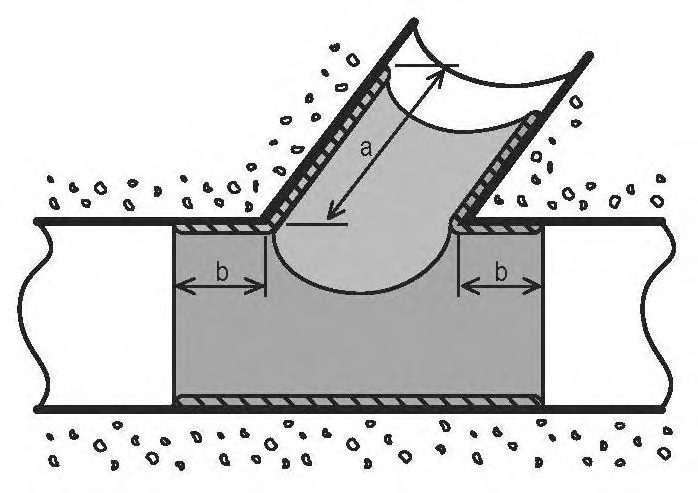
Рисунок 22 - Устройство примыкания с применением манжет на основе полиметилметакрилата
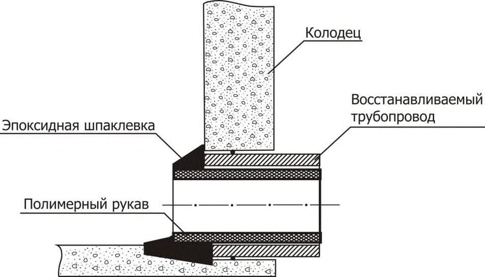
Рисунок 23 - Устройство примыкания с применением манжет из нержавеющей стали
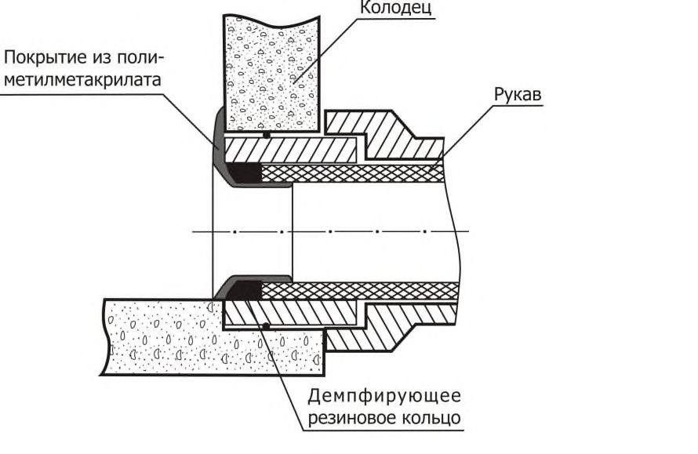
12Правила сдачи-приемки работ
Акта сдачи-приемки работ подписывают после успешной проверки восстанавливаемого интервала на герметичность, ТВ-инспекции и исследования проб.
Подрядчик предоставляет заказчику комплект документов, включающий в себя все, относящиеся к монтажу каждого смонтированного рукава, технологические операции.
На прямых участках одного диаметра допускается наличие складок глубиной не более 2% внутреннего диаметра (ДУ > 300), а при меньших диаметрах (ДУ < 300) глубиной не более 6 мм.
Наличие более глубоких складок - признак брака. При этом следует определить степень влияния этих складок на эксплуатационные и прочностные характеристики рукава. Наибольшее влияние на прочность рукава оказывают продольные складки или складки, обусловленные наличием полости в стенке старой трубы. Если складки не оказывают влияния на прочностные характеристики новой трубы, то удалять складки не рекомендуется. Дефекты, наличие которых приводит к ограничению эксплуатационных возможностей новой трубы, подлежат устранению по согласованию с заказчиком, например с применением робототехники. При этом, должно быть обеспечено сохранение или восстановление статической прочности, герметичности и коррозионной устойчивости.
На прямых участках и участках с радиусом поворота более 10×ДУ, размеры складок не должны быть более 2% ДУ.
На поворотах с радиусом кривизны 5 ДУ< R ≤ 10 ДУ для трубопроводов с круговым сечением допускаются складки глубиной до 3% ДУ, но не более 2 см.
При поворотах радиусом менее 5×ДУ допустимые размеры складок следует оговаривать отдельно.
Для оценки свойств новой трубы применяются исключительно данные репрезентативной пробы. Если проба отвержденного рукава не соответствует требуемым параметрам композиционного материала, то по согласованию с заказчиком, подрядчик за свой счет производит отбор новой пробы из восстановленного интервала.
В этом случае первая проба исключается из рассмотрения.
Независимая исследовательская лаборатория производит проверку соответствия заявленных изготовителем рукава механических характеристик, применяя метод определения упругости по трем точкам, определяет толщину стенки композиционного материала и водопроницаемость новой трубы. Результаты измерений должны, как минимум, соответствовать результатам статических расчетов. Проверка герметичности ламината проводится без наружной и внутренней пленок.
Стандартные исследования репрезентативной пробы:
- испытания на статический изгиб (по трем точкам);
- испытания на сжатие;
- испытание пробы на водопроницаемость.
Дополнительные исследования:
- склонность к ползучести;
- определение остаточного содержания стирола;
- динамическая дифференциальная калориметрия;
- спектральный анализ;
- определения содержания наполнителей и стекла.
Полученные в результате исследования проб параметры материала должны соответствовать значениям, представленным поставщиком рукава, с учетом приведенных ниже допусков.
Отклонение измеренных значений модуля эластичности и предела прочности на изгиб от декларируемых производителем рукава, должно находиться в интервале 10% <…≤ 20%.
Если полученные значения выходят за рамки интервала, то проводятся новые измерения (за счет подрядчика).
12.11Толщина стенки новой трубы
Толщина стенки рукава и толщина композиционного материала измеряются в лабораторных условиях. Для проверки статической прочности измеряется толщина композиционного материала em (толщина стенки рукава, за вычетом толщины внутреннего покрытия или защитного слоя смолы). Должно быть обеспечено значение толщины композиционного материала, полученное в результате предварительных расчетов.
Толщина слоя композиционного материала должна быть не менее 3,0 мм.
12.12Склонность к ползучести
Допустимое значение склонности к ползучести определяется исходя из данных поставщика в зависимости от возраста пробы. Возраст пробы определяет также характерные для данного материала значения допусков.
12.13Максимально допустимое содержание стирола
Остаточное содержание стирола определяется для всей массы пробы и не должно превышать 4%.
12.14Динамическая дифференциальная калориметрия
Температуры стеклования для эпоксидных смол TG1 и TG2 приводятся в технической документации изготовителя и применяются для оценки качества отверждения рукава. Заявленные изготовителем рукава значения сравниваются со значениями, полученными при лабораторных исследованиях. Эти исследования производятся только для эпоксидных смол.
12.15Спектральный анализ
С помощью спектрального анализа проверяется соответствие применяемой смолы заявленным характеристикам. Этот метод позволяет оценить как качественные характеристики, так и химический состав смол.
12.16Содержание наполнителей и стекла
С помощью прокаливания определяется содержание наполнителей и стекла в композиционном материале. Полученные значения должны совпадать с данными изготовителя рукава. В технической документации изготовителя приводятся значения допустимых отклонений.
12.17Проверка пробы на водонепроницаемость
Проба считается водонепроницаемой, если в трех точках не наблюдается проникновение воды. Факт проникновения воды считается установленным, если размещенная с внешней стороны тестовая бумага изменяет свой цвет. Допускается изменение цвета композиционного материала в результате воздействия воды.
Таблица А.1
АПриложение А. (рекомендуемое) Таблицы для определения толщины стенки гибкого полимерного рукава
| Условный внутренний диаметр восстанавлива- емого трубопровода Ду, мм | Толщина стенки новой трубы из композитного материала (группа 1), мм, при уровне грунтовых вод относительно лотка трубопрово- да, м | Толщина стенки новой трубы из композитного материала (группа 1), мм, при уровне грунтовых вод относительно лотка трубопрово- да, м | Толщина стенки новой трубы из композитного материала (группа 1), мм, при уровне грунтовых вод относительно лотка трубопрово- да, м | Толщина стенки новой трубы из композитного материала (группа 1), мм, при уровне грунтовых вод относительно лотка трубопрово- да, м | Толщина стенки новой трубы из композитного материала (группа 1), мм, при уровне грунтовых вод относительно лотка трубопрово- да, м | Толщина стенки новой трубы из композитного материала (группа 1), мм, при уровне грунтовых вод относительно лотка трубопрово- да, м | Толщина стенки новой трубы из композитного материала (группа 1), мм, при уровне грунтовых вод относительно лотка трубопрово- да, м | Толщина стенки новой трубы из композитного материала (группа 1), мм, при уровне грунтовых вод относительно лотка трубопрово- да, м |
|---|---|---|---|---|---|---|---|---|
| Условный внутренний диаметр восстанавлива- емого трубопровода Ду, мм | 1,50 | 2,00 | 2,50 | 3,00 | 3,50 | 4,00 | 4,50 | 5,00 |
| 150 | 3,0 | 3,0 | 3,0 | 3,0 | 3,0 | 3,0 | 3,0 | 3,0 |
| 200 | 3,0 | 3,0 | 3,0 | 3,2 | 3,4 | 3,5 | 3,7 | 3,9 |
| 250 | 3,1 | 3,4 | 3,7 | 4,0 | 4,2 | 4,4 | 4,6 | 4,8 |
| 300 | 3,7 | 4,1 | 4,4 | 4,8 | 5,0 | 5,3 | 5,5 | 5,8 |
| 350 | 4,5 | 4,8 | 5,2 | 5,5 | 5,9 | 6,2 | 6,5 | 6,7 |
| 400 | 5,2 | 5,5 | 5,9 | 6,3 | 6,7 | 7,0 | 7,4 | 7,7 |
| 450 | 5,8 | 6,1 | 6,6 | 7,1 | 7,5 | 7,9 | 8,3 | 8,7 |
| 500 | 6.5 | 6,9 | 7,4 | 7,9 | 8,4 | 8,8 | 9,2 | 9,6 |
| 600 | 7,7 | 8,6 | 9,3 | 9,5 | 10,0 | 10,5 | 11,0 | 11,5 |
| 700 | 9,0 | 10,0 | 10,6 | 11,0 | 11,7 | 12,3 | 12,9 | 13,4 |
| 800 | 10,1 | 11,3 | 12,3 | 12,6 | 13,4 | 14,0 | 14,7 | 15,3 |
| 900 | 11,1 | 12,7 | 13,8 | 14,4 | 15,2 | 16,3 | 16,5 | 17,2 |
| 1000 | 12,3 | 13,7 | 15,3 | 16,3 | 17,0 | 17,8 | 18,8 | 19,1 |
| 1100 | 13,5 | 15,3 | 16,7 | 17,9 | 18,9 | 19,6 | 20,5 | 21,0 |
| 1200 | 14,8 | 16,5 | 18,2 | 19.4 | 20,6 | 21,7 | 22,2 | 22,9 |
Таблица А.2
| Условный внутренний диаметр восстанавлива- емого трубопровода Ду, мм | Толщина стенки новой трубы из композитного материала (группа 2), мм, при уровне грунтовых вод относительно лотка трубопрово- да, м | Толщина стенки новой трубы из композитного материала (группа 2), мм, при уровне грунтовых вод относительно лотка трубопрово- да, м | Толщина стенки новой трубы из композитного материала (группа 2), мм, при уровне грунтовых вод относительно лотка трубопрово- да, м | Толщина стенки новой трубы из композитного материала (группа 2), мм, при уровне грунтовых вод относительно лотка трубопрово- да, м | Толщина стенки новой трубы из композитного материала (группа 2), мм, при уровне грунтовых вод относительно лотка трубопрово- да, м | Толщина стенки новой трубы из композитного материала (группа 2), мм, при уровне грунтовых вод относительно лотка трубопрово- да, м | Толщина стенки новой трубы из композитного материала (группа 2), мм, при уровне грунтовых вод относительно лотка трубопрово- да, м | Толщина стенки новой трубы из композитного материала (группа 2), мм, при уровне грунтовых вод относительно лотка трубопрово- да, м |
|---|---|---|---|---|---|---|---|---|
| Условный внутренний диаметр восстанавлива- емого трубопровода Ду, мм | 1,50 | 2,00 | 2,50 | 3,00 | 3,50 | 4,00 | 4,50 | 5,00 |
| 150 | 3,0 | 3,0 | 3,0 | 3,0 | 3,0 | 3,0 | 3,0 | 3,0 |
| 200 | 3,0 | 3,0 | 3,0 | 3,0 | 3,0 | 3,1 | 3,3 | 3,4 |
| 250 | 3,0 | 3,0 | 3,2 | 3,5 | 3,7 | 3,9 | 4,1 | 4,3 |
| 300 | 3,2 | 3,6 | 3,9 | 4,1 | 4,4 | 4,7 | 4,9 | 5,1 |
| 350 | 4,0 | 4,1 | 4,5 | 4,8 | 5,1 | 5,4 | 5,7 | 6,0 |
| 400 | 4,5 | 4,7 | 5,1 | 5,5 | 5,9 | 6,2 | 6,5 | 6,8 |
| 450 | 5,1 | 5,3 | 5,7 | 6,2 | 6,6 | 7,0 | 7,4 | 7,7 |
| 500 | 5,7 | 6,0 | 6,4 | 6,9 | 7,3 | 7,8 | 8,2 | 8,5 |
| 600 | 6,4 | 7,4 | 8,1 | 8,2 | 8,8 | 9,3 | 9,8 | 10,2 |
| 700 | 7,9 | 8,7 | 9,3 | 9,6 | 10,2 | 10,8 | 11,4 | 11,9 |
| 800 | 8,5 | 9,9 | 10,7 | 10,9 | 11,7 | 12,4 | 13,0 | 13,6 |
| 900 | 9,7 | 11,1 | 12,0 | 12,8 | 13,3 | 13,9 | 14,6 | 15,3 |
| 1000 | 10,6 | 12,0 | 13,3 | 14,2 | 14,8 | 15,6 | 16,4 | 17,0 |
| 1100 | 11,7 | 13,2 | 14,6 | 15,6 | 16,5 | 17,1 | 17,8 | 18,7 |
| 1200 | 13,0 | 14,2 | 15,9 | 17,0 | 17,9 | 18,5 | 19,6 | 20,3 |
Таблица А.3
| Условный внутренний диаметр восстанавлива- емого трубопровода Ду, мм | Толщина стенки новой трубы из композитного материала (группа 3), мм, при уровне грунтовых вод относительно лотка трубопрово- да, м | Толщина стенки новой трубы из композитного материала (группа 3), мм, при уровне грунтовых вод относительно лотка трубопрово- да, м | Толщина стенки новой трубы из композитного материала (группа 3), мм, при уровне грунтовых вод относительно лотка трубопрово- да, м | Толщина стенки новой трубы из композитного материала (группа 3), мм, при уровне грунтовых вод относительно лотка трубопрово- да, м | Толщина стенки новой трубы из композитного материала (группа 3), мм, при уровне грунтовых вод относительно лотка трубопрово- да, м | Толщина стенки новой трубы из композитного материала (группа 3), мм, при уровне грунтовых вод относительно лотка трубопрово- да, м | Толщина стенки новой трубы из композитного материала (группа 3), мм, при уровне грунтовых вод относительно лотка трубопрово- да, м | Толщина стенки новой трубы из композитного материала (группа 3), мм, при уровне грунтовых вод относительно лотка трубопрово- да, м |
|---|---|---|---|---|---|---|---|---|
| Условный внутренний диаметр восстанавлива- емого трубопровода Ду, мм | 1,50 | 2,00 | 2,50 | 3,00 | 3,50 | 4,00 | 4,50 | 5,00 |
| 150 | 3,0 | 3,0 | 3,0 | 3,0 | 3,0 | 3,0 | 3,0 | 3,1 |
| 200 | 3,0 | 3,0 | 3,1 | 3,3 | 3,5 | 3,7 | 3,9 | 4,1 |
| 250 | 3,1 | 3,5 | 3,8 | 4,1 | 4,4 | 4,7 | 4,9 | 5,1 |
| 300 | 3,7 | 4,1 | 4,6 | 4,9 | 5,3 | 5,6 | 5,9 | 6,1 |
| 350 | 4,3 | 4,8 | 5,3 | 5,7 | 6,1 | 6,5 | 6,8 | 7,2 |
| 400 | 4,9 | 5,5 | 6,0 | 6,5 | 7,0 | 7,4 | 7,8 | 8,2 |
| 450 | 5,4 | 6,2 | 6,8 | 7,4 | 7,9 | 8,3 | 8,8 | 9,2 |
| 500 | 6,0 | 6,9 | 7,5 | 8,2 | 8,7 | 9,3 | 9,7 | 10,2 |
| 600 | 7,2 | 8,2 | 9,0 | 9,8 | 10,5 | 11,1 | 11,7 | 12,2 |
| 700 | 8,4 | 9,6 | 10,5 | 11,4 | 12,2 | 12,9 | 13,6 | 14,2 |
| 800 | 9,6 | 10,9 | 12,0 | 13,0 | 13,9 | 14,8 | 15,5 | 16,3 |
| 900 | 10,8 | 12,2 | 13,5 | 14,6 | 15,7 | 16,6 | 17,5 | 18,3 |
| 1000 | 12,0 | 13,6 | 15,0 | 16,2 | 17,4 | 18,4 | 19,4 | 20,3 |
| 1100 | 13,1 | 14,9 | 16,5 | 17,8 | 19,1 | 20,3 | 21,3 | 22,3 |
| 1200 | 14,3 | 16,3 | 17,9 | 19,4 | 20,9 | 22,1 | 23,3 | 24,4 |
Таблица А.4 -
| Условный внутренний диаметр восстанавлива- емого трубопровода Ду, мм | Толщина стенки новой трубы из композитного материала (группа 4), мм, при уровне грунтовых вод относительно лотка трубопрово- да, м | Толщина стенки новой трубы из композитного материала (группа 4), мм, при уровне грунтовых вод относительно лотка трубопрово- да, м | Толщина стенки новой трубы из композитного материала (группа 4), мм, при уровне грунтовых вод относительно лотка трубопрово- да, м | Толщина стенки новой трубы из композитного материала (группа 4), мм, при уровне грунтовых вод относительно лотка трубопрово- да, м | Толщина стенки новой трубы из композитного материала (группа 4), мм, при уровне грунтовых вод относительно лотка трубопрово- да, м | Толщина стенки новой трубы из композитного материала (группа 4), мм, при уровне грунтовых вод относительно лотка трубопрово- да, м | Толщина стенки новой трубы из композитного материала (группа 4), мм, при уровне грунтовых вод относительно лотка трубопрово- да, м | Толщина стенки новой трубы из композитного материала (группа 4), мм, при уровне грунтовых вод относительно лотка трубопрово- да, м |
|---|---|---|---|---|---|---|---|---|
| Условный внутренний диаметр восстанавлива- емого трубопровода Ду, мм | 1,50 | 2,00 | 2,50 | 3,00 | 3,50 | 4,00 | 4,50 | 5,00 |
| 150 | 3,0 | 3,0 | 3,0 | 3,0 | 3,0 | 3,0 | 3,0 | 3,0 |
| 200 | 3,0 | 3,0 | 3,0 | 3,2 | 3,4 | 3,6 | 3,8 | 4,0 |
| 250 | 3,0 | 3,3 | 3,7 | 4,0 | 4,2 | 4,5 | 4,7 | 4,9 |
| 300 | 3,5 | 4,0 | 4,4 | 4,7 | 5,1 | 5,4 | 5,6 | 5,9 |
| 350 | 4,1 | 4,6 | 5,1 | 5,5 | 5,9 | 6,2 | 6,6 | 6,9 |
| 400 | 4,7 | 5,3 | 5,8 | 6,3 | 6,7 | 7,1 | 7,5 | 7,9 |
| 450 | 5,3 | 5,9 | 6,5 | 7,1 | 7,6 | 8,0 | 8,4 | 8,8 |
| 500 | 5,9 | 6,6 | 7,3 | 7,9 | 8,4 | 8,9 | 9,4 | 9,8 |
| 600 | 7,0 | 7,9 | 8,7 | 9,4 | 10,1 | 10,7 | 11,2 | 11,8 |
| 700 | 8,2 | 9,2 | 10,1 | 11,0 | 11,7 | 12,4 | 13,1 | 13,7 |
| 800 | 9,4 | 10,5 | 11,6 | 12,5 | 13,4 | 14,2 | 14,9 | 15,7 |
| 900 | 10,4 | 11,8 | 13,0 | 14,1 | 15,0 | 15,9 | 16,8 | 17,6 |
| 1000 | 11,6 | 13,1 | 14,4 | 15,6 | 16,7 | 17,7 | 18,6 | 19,5 |
| 1100 | 12,7 | 14,4 | 15,8 | 17,2 | 18,4 | 19,5 | 20,5 | 21,5 |
| 1200 | 13,9 | 15,7 | 17,3 | 18,7 | 20,0 | 21,2 | 22,3 | 23,4 |
Таблица А.5
| Условный внутренний диаметр восстанавлива- емого трубопровода Ду, мм | Толщина стенки новой трубы из композитного материала (группа 5), мм, при уровне грунтовых вод относительно лотка трубопрово- да, м | Толщина стенки новой трубы из композитного материала (группа 5), мм, при уровне грунтовых вод относительно лотка трубопрово- да, м | Толщина стенки новой трубы из композитного материала (группа 5), мм, при уровне грунтовых вод относительно лотка трубопрово- да, м | Толщина стенки новой трубы из композитного материала (группа 5), мм, при уровне грунтовых вод относительно лотка трубопрово- да, м | Толщина стенки новой трубы из композитного материала (группа 5), мм, при уровне грунтовых вод относительно лотка трубопрово- да, м | Толщина стенки новой трубы из композитного материала (группа 5), мм, при уровне грунтовых вод относительно лотка трубопрово- да, м | Толщина стенки новой трубы из композитного материала (группа 5), мм, при уровне грунтовых вод относительно лотка трубопрово- да, м | Толщина стенки новой трубы из композитного материала (группа 5), мм, при уровне грунтовых вод относительно лотка трубопрово- да, м |
|---|---|---|---|---|---|---|---|---|
| Условный внутренний диаметр восстанавлива- емого трубопровода Ду, мм | 1,50 | 2,00 | 2,50 | 3,00 | 3,50 | 4,00 | 4,50 | 5,00 |
| 150 | 3,0 | 3,0 | 3,0 | 3,0 | 3,0 | 3,0 | 3,0 | 3,0 |
| 1 | 2 | 3 | 4 | 5 | 6 | 7 | 8 | 9 |
| 200 | 3,0 | 3,0 | 3,0 | 3,1 | 3,3 | 3,5 | 3,7 | 3,8 |
| 250 | 3,0 | 3,2 | 3,6 | 3,8 | 4,1 | 4,3 | 4,6 | 4,8 |
| 300 | 3,4 | 3,9 | 4,3 | 4,6 | 4,9 | 5,2 | 5,5 | 5,7 |
| 350 | 4,1 | 4,5 | 5,0 | 5,4 | 5,7 | 6,1 | 6,4 | 6,7 |
| 400 | 4,6 | 5,2 | 5,7 | 6,1 | 6,5 | 6,9 | 7,3 | 7,6 |
| 450 | 5,2 | 5,8 | 6,4 | 6,9 | 7,3 | 7,8 | 8,2 | 8,5 |
| 500 | 5,8 | 6,4 | 7,0 | 7,6 | 8,1 | 8,6 | 9,1 | 9,5 |
| 600 | 6,9 | 7,7 | 8,4 | 9,1 | 9,8 | 10,3 | 10,9 | 11,4 |
| 700 | 8,1 | 9,0 | 9,8 | 10,6 | 11,4 | 12,0 | 12,7 | 13,2 |
| 800 | 9,0 | 10,2 | 11,2 | 12,1 | 13,0 | 13,8 | 14,5 | 15,1 |
| 900 | 10,2 | 11,5 | 12,6 | 13,6 | 14,6 | 15,5 | 16,2 | 17,0 |
| 1000 | 11,3 | 12,7 | 14,0 | 15,1 | 16,2 | 17,2 | 18,0 | 18,9 |
| 1100 | 12,4 | 14,0 | 15,4 | 16,6 | 17,8 | 18,9 | 19,8 | 20,8 |
| 1200 | 13,5 | 15,2 | 16,8 | 18,1 | 19,4 | 20,6 | 21,6 | 22,6 |
Таблица А.6
| Условный внутренний диаметр восстанавлива- емого трубопровода Ду, мм | Толщина стенки новой трубы из композитного материала (группа 6), мм, при уровне грунтовых вод относительно лотка трубопрово- да, м | Толщина стенки новой трубы из композитного материала (группа 6), мм, при уровне грунтовых вод относительно лотка трубопрово- да, м | Толщина стенки новой трубы из композитного материала (группа 6), мм, при уровне грунтовых вод относительно лотка трубопрово- да, м | Толщина стенки новой трубы из композитного материала (группа 6), мм, при уровне грунтовых вод относительно лотка трубопрово- да, м | Толщина стенки новой трубы из композитного материала (группа 6), мм, при уровне грунтовых вод относительно лотка трубопрово- да, м | Толщина стенки новой трубы из композитного материала (группа 6), мм, при уровне грунтовых вод относительно лотка трубопрово- да, м | Толщина стенки новой трубы из композитного материала (группа 6), мм, при уровне грунтовых вод относительно лотка трубопрово- да, м | Толщина стенки новой трубы из композитного материала (группа 6), мм, при уровне грунтовых вод относительно лотка трубопрово- да, м |
|---|---|---|---|---|---|---|---|---|
| Условный внутренний диаметр восстанавлива- емого трубопровода Ду, мм | 1,50 | 2,00 | 2,50 | 3,00 | 3,50 | 4,00 | 4,50 | 5,00 |
| 150 | 3,0 | 3,0 | 3,0 | 3,0 | 3,0 | 3,0 | 3,0 | 3,0 |
| 200 | 3,0 | 3,0 | 3,0 | 3,1 | 3,3 | 3,5 | 3,7 | 3,8 |
| 250 | 3,0 | 3,2 | 3,6 | 3,9 | 4,1 | 4,4 | 4,6 | 4,8 |
| 300 | 3,4 | 3,9 | 4,3 | 4,6 | 4,9 | 5,2 | 5,5 | 5,7 |
| 350 | 4,0 | 4,5 | 5,0 | 5,4 | 5,7 | 6,1 | 6,4 | 6,7 |
| 400 | 4,6 | 5,2 | 5,7 | 6,1 | 6,5 | 6,9 | 7,3 | 7,6 |
| 450 | 5,1 | 5,8 | 6,4 | 6,9 | 7,4 | 7,8 | 8,2 | 8,6 |
| 500 | 5,7 | 6,4 | 7,1 | 7,7 | 8,2 | 8,6 | 9,1 | 9,5 |
| 600 | 6,8 | 7,7 | 8,5 | 9,2 | 9,8 | 10,4 | 10,9 | 11,4 |
| 700 | 7,9 | 9,0 | 9,9 | 10,7 | 11,4 | 12,1 | 12,7 | 13,3 |
| 800 | 9,0 | 10,2 | 11,2 | 12,2 | 13,0 | 13,8 | 14,5 | 15,2 |
| 900 | 10,2 | 11,5 | 12,6 | 13,7 | 14,6 | 15,5 | 16,3 | 17,1 |
| 1000 | 11,3 | 12,7 | 14,0 | 15,2 | 16,2 | 17,2 | 18,1 | 19,0 |
| 1100 | 12,4 | 14,0 | 15,4 | 16,7 | 17,9 | 18,9 | 19,9 | 20,9 |
| 1200 | 13,5 | 15,2 | 16,8 | 18,2 | 19,5 | 20,6 | 21,7 | 22,8 |
Таблица А.7
| Условный внутренний диаметр восстанавлива- емого трубопровода Ду, мм | Толщина стенки новой трубы из композитного материала (группа 7), мм, при уровне грунтовых вод относительно лотка трубопрово- да, м | Толщина стенки новой трубы из композитного материала (группа 7), мм, при уровне грунтовых вод относительно лотка трубопрово- да, м | Толщина стенки новой трубы из композитного материала (группа 7), мм, при уровне грунтовых вод относительно лотка трубопрово- да, м | Толщина стенки новой трубы из композитного материала (группа 7), мм, при уровне грунтовых вод относительно лотка трубопрово- да, м | Толщина стенки новой трубы из композитного материала (группа 7), мм, при уровне грунтовых вод относительно лотка трубопрово- да, м | Толщина стенки новой трубы из композитного материала (группа 7), мм, при уровне грунтовых вод относительно лотка трубопрово- да, м | Толщина стенки новой трубы из композитного материала (группа 7), мм, при уровне грунтовых вод относительно лотка трубопрово- да, м | Толщина стенки новой трубы из композитного материала (группа 7), мм, при уровне грунтовых вод относительно лотка трубопрово- да, м |
|---|---|---|---|---|---|---|---|---|
| Условный внутренний диаметр восстанавлива- емого трубопровода Ду, мм | 1,50 | 2,00 | 2,50 | 3,00 | 3,50 | 4,00 | 4,50 | 5,00 |
| 150 | 3,0 | 3,0 | 3,0 | 3,0 | 3,0 | 3,0 | 3,0 | 3,0 |
| 200 | 3,0 | 3,0 | 3,0 | 3,0 | 3,4 | 3,4 | 3,6 | 3,8 |
| 250 | 3,0 | 3,2 | 3,5 | 3,8 | 4,1 | 4,3 | 4,5 | 4,7 |
| 300 | 3,4 | 3,8 | 4,2 | 4,5 | 4,9 | 5,1 | 5,4 | 5,7 |
| 350 | 4,0 | 4,5 | 4,9 | 5,3 | 5,7 | 6,0 | 6,3 | 6,6 |
| 400 | 4,5 | 5,1 | 5,6 | 6,0 | 6,5 | 6,8 | 7,2 | 7,5 |
| 450 | 5,1 | 5,7 | 6,3 | 6,8 | 7,3 | 7,7 | 8,1 | 8,4 |
| 500 | 5,7 | 6,3 | 7,0 | 7,5 | 8,1 | 8,5 | 9,0 | 9,4 |
| 600 | 6,8 | 7,6 | 8,3 | 9,0 | 9,7 | 10,2 | 10,7 | 11,2 |
| 700 | 7,9 | 8,8 | 9,7 | 10,5 | 11,2 | 11,9 | 12,5 | 13,1 |
| 800 | 8,9 | 10,1 | 11,1 | 12,0 | 12,8 | 13,6 | 14,3 | 15,0 |
| 900 | 10,0 | 11,3 | 12,5 | 13,5 | 14,4 | 15,3 | 16,1 | 16,8 |
| 1000 | 11,1 | 12,6 | 13,8 | 15,0 | 16,0 | 17,0 | 17,8 | 18,7 |
| 1100 | 12,2 | 13,8 | 15,2 | 16,4 | 17,6 | 18,6 | 19,6 | 20,5 |
| 1200 | 13,3 | 15,1 | 16,6 | 17,9 | 19,2 | 20,3 | 21,4 | 22,4 |
Таблица А.8
| Условный внутренний диаметр восстанавлива- емого трубопровода Ду, | Толщина стенки новой трубы из композитного материала (группа 8), мм, при уровне грунтовых вод относительно лотка трубопрово- да, м | Толщина стенки новой трубы из композитного материала (группа 8), мм, при уровне грунтовых вод относительно лотка трубопрово- да, м | Толщина стенки новой трубы из композитного материала (группа 8), мм, при уровне грунтовых вод относительно лотка трубопрово- да, м | Толщина стенки новой трубы из композитного материала (группа 8), мм, при уровне грунтовых вод относительно лотка трубопрово- да, м | Толщина стенки новой трубы из композитного материала (группа 8), мм, при уровне грунтовых вод относительно лотка трубопрово- да, м | Толщина стенки новой трубы из композитного материала (группа 8), мм, при уровне грунтовых вод относительно лотка трубопрово- да, м | Толщина стенки новой трубы из композитного материала (группа 8), мм, при уровне грунтовых вод относительно лотка трубопрово- да, м | Толщина стенки новой трубы из композитного материала (группа 8), мм, при уровне грунтовых вод относительно лотка трубопрово- да, м |
|---|---|---|---|---|---|---|---|---|
| мм | 1,50 | 2,00 | 2,50 | 3,00 | 3,50 | 4,00 | 4,50 | 5,00 |
| 150 | 3,0 | 3,0 | 3,0 | 3,0 | 3,0 | 3,0 | 3,0 | 3,0 |
| 200 | 3,0 | 3,0 | 3,0 | 3,0 | 3,0 | 3,0 | 3,0 | 3,0 |
| 250 | 3,0 | 3,0 | 3,0 | 3,0 | 3,0 | 3,0 | 3,0 | 3,0 |
| 300 | 3,0 | 3,0 | 3,0 | 3,1 | 3,2 | 3,4 | 3,5 | 3,6 |
| 350 | 3,0 | 3,1 | 3,4 | 3,6 | 3,8 | 3,9 | 4,1 | 4,2 |
| 400 | 3,4 | 3,6 | 3,8 | 4,1 | 4,3 | 4,5 | 4,7 | 4,8 |
| 450 | 3,7 | 4,0 | 4,3 | 4,6 | 4,8 | 5,0 | 5,2 | 5,4 |
| 500 | 4,3 | 4,5 | 4,8 | 5,1 | 5,3 | 5,6 | 5,8 | 6,0 |
| 600 | 5,2 | 5,6 | 5,9 | 6,1 | 6,4 | 6,7 | 7,0 | 7,2 |
| 700 | 6,0 | 6,3 | 7,1 | 7,3 | 7,5 | 7,8 | 8,1 | 8,4 |
| 800 | 6,6 | 7,5 | 7,8 | 8,3 | 8,7 | 8,9 | 9,3 | 9,7 |
| 900 | 7,3 | 8,5 | 9,0 | 9,6 | 10,2 | 10,3 | 10,5 | 10,8 |
| 1000 | 8,1 | 9,4 | 10,1 | 10,2 | 11,3 | 11,8 | 12,3 | 12,5 |
| 1100 | 8,9 | 10,1 | 10,6 | 11,2 | 12,4 | 12,9 | 13,5 | 14,0 |
| 1200 | 9,9 | 10,9 | 12,1 | 12,2 | 13,5 | 14,2 | 14,7 | 15,3 |
Таблица А.9
| Условный внутренний диаметр восстанавлива- емого трубопровода Ду, мм | Толщина стенки новой трубы из композитного материала (группа 9), мм, при уровне грунтовых вод относительно лотка трубопрово- да, м | Толщина стенки новой трубы из композитного материала (группа 9), мм, при уровне грунтовых вод относительно лотка трубопрово- да, м | Толщина стенки новой трубы из композитного материала (группа 9), мм, при уровне грунтовых вод относительно лотка трубопрово- да, м | Толщина стенки новой трубы из композитного материала (группа 9), мм, при уровне грунтовых вод относительно лотка трубопрово- да, м | Толщина стенки новой трубы из композитного материала (группа 9), мм, при уровне грунтовых вод относительно лотка трубопрово- да, м | Толщина стенки новой трубы из композитного материала (группа 9), мм, при уровне грунтовых вод относительно лотка трубопрово- да, м | Толщина стенки новой трубы из композитного материала (группа 9), мм, при уровне грунтовых вод относительно лотка трубопрово- да, м | Толщина стенки новой трубы из композитного материала (группа 9), мм, при уровне грунтовых вод относительно лотка трубопрово- да, м |
|---|---|---|---|---|---|---|---|---|
| Условный внутренний диаметр восстанавлива- емого трубопровода Ду, мм | 1,50 | 2,00 | 2,50 | 3,00 | 3,50 | 4,00 | 4,50 | 5,00 |
| 150 | 3,0 | 3,0 | 3,0 | 3,0 | 3,0 | 3,0 | 3,0 | 3,0 |
| 200 | 3,0 | 3,0 | 3,0 | 3,0 | 3,0 | 3,0 | 3,0 | 3,0 |
| 250 | 3.0 | 3,0 | 3,0 | 3,0 | 3,0 | 3,0 | 3,0 | 3,0 |
| 300 | 3,0 | 3,0 | 3,0 | 3,0 | 3,1 | 3,2 | 3,4 | 3,5 |
| 350 | 3,0 | 3,0 | 3,2 | 3,4 | 3,6 | 3,8 | 4,0 | 4,1 |
| 400 | 3,2 | 3,4 | 3,7 | 3,9 | 4,1 | 4,3 | 4,5 | 4,6 |
| 450 | 3,7 | 3,9 | 4,1 | 4,4 | 4,6 | 4,8 | 5,0 | 5,2 |
| 500 | 4,1 | 4,3 | 4,6 | 4,9 | 5,1 | 5,3 | 5,6 | 5,8 |
| 600 | 4,7 | 5,4 | 5,6 | 5,8 | 6,1 | 6,4 | 6,7 | 7,0 |
| 700 | 5,4 | 6,0 | 6,5 | 7,2 | 7,3 | 7,5 | 7,8 | 8,1 |
| 800 | 6,2 | 6,9 | 7,7 | 8,0 | 8,2 | 8,5 | 8,9 | 9,2 |
| 900 | 7,0 | 8,1 | 8,7 | 9,2 | 9,7 | 9,9 | 10,2 | 10,4 |
| 1000 | 7,7 | 9,0 | 9,7 | 10,3 | 10,8 | 11,3 | 11,4 | 11,6 |
| 1100 | 8,5 | 9,5 | 10,7 | 11,3 | 11,8 | 12,3 | 12,5 | 12,7 |
| 1200 | 9,5 | 10,2 | 11,6 | 12,3 | 12,9 | 13,5 | 14,0 | 14,6 |
Таблица А.10
| Условный внутренний диаметр восстанавли- ваемого трубопровода Ду, мм | Толщина стенки новой трубы из композитного материала (группа 10), мм, при уровне грунтовых вод относительно лотка трубопровода, м | Толщина стенки новой трубы из композитного материала (группа 10), мм, при уровне грунтовых вод относительно лотка трубопровода, м | Толщина стенки новой трубы из композитного материала (группа 10), мм, при уровне грунтовых вод относительно лотка трубопровода, м | Толщина стенки новой трубы из композитного материала (группа 10), мм, при уровне грунтовых вод относительно лотка трубопровода, м | Толщина стенки новой трубы из композитного материала (группа 10), мм, при уровне грунтовых вод относительно лотка трубопровода, м | Толщина стенки новой трубы из композитного материала (группа 10), мм, при уровне грунтовых вод относительно лотка трубопровода, м | Толщина стенки новой трубы из композитного материала (группа 10), мм, при уровне грунтовых вод относительно лотка трубопровода, м | Толщина стенки новой трубы из композитного материала (группа 10), мм, при уровне грунтовых вод относительно лотка трубопровода, м |
|---|---|---|---|---|---|---|---|---|
| Условный внутренний диаметр восстанавли- ваемого трубопровода Ду, мм | 1,50 | 2,00 | 2,50 | 3,00 | 3,50 | 4,00 | 4,50 | 5,00 |
| 150 | 3,0 | 3,0 | 3,0 | 3,0 | 3,0 | 3,0 | 3,0 | 3,0 |
| 200 | 3,0 | 3,0 | 3,0 | 3,0 | 3,0 | 3,0 | 3,0 | 3,0 |
| 250 | 3,0 | 3,0 | 3,0 | 3,0 | 3,0 | 3,0 | 3,0 | 3,0 |
| 300 | 3,0 | 3,0 | 3,0 | 3,0 | 3,0 | 3,1 | 3,2 | 3,4 |
| 350 | 3,0 | 3,0 | 3,1 | 3,3 | 3,5 | 3,6 | 3,8 | 3,9 |
| 400 | 3,1 | 3,3 | 3,5 | 3,8 | 3,9 | 4,1 | 4,3 | 4,5 |
| 450 | 3,4 | 3,7 | 4,0 | 4,2 | 4,4 | 4,6 | 4,8 | 5,0 |
| 500 | 3,8 | 4,2 | 4,4 | 4,7 | 4,9 | 5,1 | 5,4 | 5,6 |
| 600 | 4,7 | 5,0 | 5,4 | 5,6 | 5,9 | 6,2 | 6,4 | 6,7 |
| 700 | 5,5 | 5,8 | 6,5 | 6,7 | 6,9 | 7,2 | 7,5 | 7,8 |
| 800 | 6,0 | 6,6 | 7,1 | 7,6 | 7,9 | 8,2 | 8,5 | 8,8 |
| 900 | 6,7 | 7,4 | 8,0 | 8,5 | 9,1 | 9,2 | 9,6 | 9,9 |
| 1000 | 7,4 | 8,2 | 8,9 | 9,4 | 9,8 | 10,4 | 11,0 | 11,1 |
| 1100 | 8,2 | 9,0 | 9,7 | 10,3 | 11,0 | 11,5 | 11,9 | 12,1 |
| 1200 | 9,1 | 9,8 | 10,6 | 11,3 | 11,9 | 12,5 | 12,9 | 13,6 |
Таблица А.11
| Условный внутренний диаметр восстанавли- ваемого трубопровода Ду, мм | Толщина стенки новой трубы из композитного материала (группа 11), мм, при уровне грунтовых вод относительно лотка трубопровода, м | Толщина стенки новой трубы из композитного материала (группа 11), мм, при уровне грунтовых вод относительно лотка трубопровода, м | Толщина стенки новой трубы из композитного материала (группа 11), мм, при уровне грунтовых вод относительно лотка трубопровода, м | Толщина стенки новой трубы из композитного материала (группа 11), мм, при уровне грунтовых вод относительно лотка трубопровода, м | Толщина стенки новой трубы из композитного материала (группа 11), мм, при уровне грунтовых вод относительно лотка трубопровода, м | Толщина стенки новой трубы из композитного материала (группа 11), мм, при уровне грунтовых вод относительно лотка трубопровода, м | Толщина стенки новой трубы из композитного материала (группа 11), мм, при уровне грунтовых вод относительно лотка трубопровода, м | Толщина стенки новой трубы из композитного материала (группа 11), мм, при уровне грунтовых вод относительно лотка трубопровода, м |
|---|---|---|---|---|---|---|---|---|
| Условный внутренний диаметр восстанавли- ваемого трубопровода Ду, мм | 1,50 | 2,00 | 2,50 | 3,00 | 3,50 | 4,00 | 4,50 | 5,00 |
| 150 | 3,0 | 3,0 | 3,0 | 3,0 | 3,0 | 3,0 | 3,0 | 3,0 |
| 200 | 3,0 | 3,0 | 3,0 | 3,0 | 3,0 | 3,0 | 3,0 | 3,0 |
| 250 | 3,0 | 3,0 | 3,0 | 3,0 | 3,0 | 3,0 | 3,0 | 3,0 |
| 300 | 3,0 | 3,0 | 3,0 | 3,0 | 3,0 | 3,0 | 3,1 | 3,2 |
| 350 | 3,0 | 3,0 | 3,0 | 3,2 | 3,3 | 3,5 | 3,6 | 3,8 |
| 400 | 3,0 | 3,2 | 3,4 | 3,6 | 3,8 | 4,0 | 4,1 | 4,3 |
| 450 | 3,3 | 3,6 | 3,8 | 4,1 | 4,3 | 4,5 | 4,7 | 4,8 |
| 500 | 3,8 | 4,0 | 4,3 | 4,5 | 4,8 | 5,0 | 5,2 | 5,4 |
| 600 | 4,4 | 4,8 | 5,2 | 5,4 | 5,7 | 5,9 | 6,2 | 6,4 |
| 700 | 5,1 | 5,6 | 6,1 | 6,5 | 6,6 | 6,9 | 7,2 | 7,5 |
| 800 | 5,8 | 6,4 | 6,9 | 7,3 | 7,6 | 7,9 | 8,2 | 8,5 |
| 900 | 6,5 | 7,2 | 7,7 | 8,2 | 8,7 | 8,9 | 9,3 | 9,6 |
| 1000 | 7,2 | 7,9 | 8,6 | 9,2 | 9,5 | 10,5 | 10,7 | 10,7 |
| 1100 | 7,9 | 8,7 | 9,5 | 10,0 | 11,0 | 11,5 | 11,5 | 11,7 |
| 1200 | 8,8 | 9,4 | 10,8 | 10,9 | 11,5 | 12,1 | 12,7 | 13,6 |
Таблица А.12
| Условный внутренний диаметр восстанавли- ваемого трубопровода | Толщина стенки новой трубы из композитного материала (группа 12), мм, при уровне грунтовых вод относительно лотка трубопровода, м | Толщина стенки новой трубы из композитного материала (группа 12), мм, при уровне грунтовых вод относительно лотка трубопровода, м | Толщина стенки новой трубы из композитного материала (группа 12), мм, при уровне грунтовых вод относительно лотка трубопровода, м | Толщина стенки новой трубы из композитного материала (группа 12), мм, при уровне грунтовых вод относительно лотка трубопровода, м | Толщина стенки новой трубы из композитного материала (группа 12), мм, при уровне грунтовых вод относительно лотка трубопровода, м | Толщина стенки новой трубы из композитного материала (группа 12), мм, при уровне грунтовых вод относительно лотка трубопровода, м | Толщина стенки новой трубы из композитного материала (группа 12), мм, при уровне грунтовых вод относительно лотка трубопровода, м | Толщина стенки новой трубы из композитного материала (группа 12), мм, при уровне грунтовых вод относительно лотка трубопровода, м |
|---|---|---|---|---|---|---|---|---|
| Ду, мм | 1,50 | 2,00 | 2,50 | 3,00 | 3,50 | 4,00 | 4,50 | 5,00 |
| 150 | 3,0 | 3,0 | 3,0 | 3,0 | 3,0 | 3,0 | 3,0 | 3,0 |
| 200 | 3,0 | 3,0 | 3,0 | 3,0 | 3,0 | 3,0 | 3,0 | 3,0 |
| 250 | 3,0 | 3,0 | 3,0 | 3,0 | 3,0 | 3,0 | 3,0 | 3,0 |
| 300 | 3,0 | 3,0 | 3,0 | 3,0 | 3,0 | 3,0 | 3,0 | 3,1 |
| 350 | 3,0 | 3,0 | 3,0 | 3,1 | 3,2 | 3,4 | 3,5 | 3,7 |
| 400 | 3,0 | 3,1 | 3,3 | 3,5 | 3,7 | 3,9 | 4,0 | 4,2 |
| 450 | 3,2 | 3,5 | 3,7 | 3,9 | 4,2 | 4,3 | 4,5 | 4,7 |
| 500 | 3,5 | 3,9 | 4,1 | 4,4 | 4,6 | 4,8 | 5,0 | 5,2 |
| 600 | 4,2 | 4,7 | 5,1 | 5,2 | 5,5 | 5,8 | 6,0 | 6,2 |
| 700 | 4,9 | 5,4 | 5,9 | 6,2 | 6,4 | 6,7 | 7,0 | 7,3 |
| 800 | 5,6 | 6,2 | 6,7 | 7,1 | 7,3 | 7,7 | 8,0 | 8,3 |
| 900 | 6,3 | 7,0 | 7,5 | 8,0 | 8,4 | 8,8 | 9,0 | 9,3 |
| 1000 | 7,0 | 7,6 | 8,4 | 8,8 | 9,2 | 9,8 | 10,3 | 10,3 |
| 1100 | 7,7 | 8,4 | 9,2 | 9,7 | 10,6 | 11,1 | 11,3 | 11,4 |
| 1200 | 8,6 | 9,2 | 10,4 | 10,6 | 11,6 | 12,1 | 12,1 | 12,7 |
Таблица А.13
| Условный внутренний диаметр восстанавли- ваемого трубопровода Ду, мм | Толщина стенки новой трубы из композитного материала (группа 13), мм, при уровне грунтовых вод относительно лотка трубопровода, м | Толщина стенки новой трубы из композитного материала (группа 13), мм, при уровне грунтовых вод относительно лотка трубопровода, м | Толщина стенки новой трубы из композитного материала (группа 13), мм, при уровне грунтовых вод относительно лотка трубопровода, м | Толщина стенки новой трубы из композитного материала (группа 13), мм, при уровне грунтовых вод относительно лотка трубопровода, м | Толщина стенки новой трубы из композитного материала (группа 13), мм, при уровне грунтовых вод относительно лотка трубопровода, м | Толщина стенки новой трубы из композитного материала (группа 13), мм, при уровне грунтовых вод относительно лотка трубопровода, м | Толщина стенки новой трубы из композитного материала (группа 13), мм, при уровне грунтовых вод относительно лотка трубопровода, м | Толщина стенки новой трубы из композитного материала (группа 13), мм, при уровне грунтовых вод относительно лотка трубопровода, м |
|---|---|---|---|---|---|---|---|---|
| Условный внутренний диаметр восстанавли- ваемого трубопровода Ду, мм | 1,50 | 2,00 | 2,50 | 3,00 | 3,50 | 4,00 | 4,50 | 5,00 |
| 150 | 3,0 | 3,0 | 3,0 | 3,0 | 3,0 | 3,0 | 3,0 | 3,0 |
| 200 | 3,0 | 3,0 | 3,0 | 3,0 | 3,0 | 3,0 | 3,0 | 3,0 |
| 250 | 3,0 | 3,0 | 3,0 | 3,0 | 3,0 | 3,0 | 3,0 | 3,0 |
| 300 | 3,0 | 3,0 | 3,0 | 3,0 | 3,0 | 3,0 | 3,0 | 3,0 |
| 350 | 3,0 | 3,0 | 3,0 | 3,0 | 3,1 | 3,3 | 3,4 | 3,5 |
| 400 | 3,0 | 3,0 | 3,2 | 3,4 | 3,6 | 3,8 | 3,9 | 4,0 |
| 450 | 3,1 | 3,4 | 3,6 | 3,8 | 4,0 | 4,2 | 4,4 | 4,5 |
| 500 | 3,6 | 3,8 | 4,0 | 4,3 | 4,5 | 4,7 | 4,9 | 5,0 |
| 600 | 4,1 | 4,5 | 4,9 | 5,1 | 5,4 | 5,6 | 5,8 | 6,0 |
| 700 | 4,8 | 5,3 | 5,7 | 6,1 | 6,2 | 6,5 | 6,8 | 7,0 |
| 800 | 5,4 | 6,0 | 6,5 | 6,9 | 7,1 | 7,5 | 7,7 | 8,0 |
| 900 | 6,1 | 6,8 | 7,6 | 7,7 | 8,2 | 8,4 | 8,7 | 9,0 |
| 1000 | 6,8 | 7,4 | 8,1 | 8,6 | 9,1 | 9,4 | 9,8 | 10,0 |
| 1100 | 7,5 | 8,2 | 8,8 | 9,4 | 10,0 | 10,4 | 10,6 | 11,0 |
| 1200 | 8,3 | 8,9 | 9,6 | 10,4 | 10,8 | 11,4 | 11,9 | 12,4 |
Таблица А.14
| Условный внутренний диаметр восстанавли- ваемого трубопровода Ду, мм | Толщина стенки новой трубы из композитного материала (группа 14), мм, при уровне грунтовых вод относительно лотка трубопровода, м | Толщина стенки новой трубы из композитного материала (группа 14), мм, при уровне грунтовых вод относительно лотка трубопровода, м | Толщина стенки новой трубы из композитного материала (группа 14), мм, при уровне грунтовых вод относительно лотка трубопровода, м | Толщина стенки новой трубы из композитного материала (группа 14), мм, при уровне грунтовых вод относительно лотка трубопровода, м | Толщина стенки новой трубы из композитного материала (группа 14), мм, при уровне грунтовых вод относительно лотка трубопровода, м | Толщина стенки новой трубы из композитного материала (группа 14), мм, при уровне грунтовых вод относительно лотка трубопровода, м | Толщина стенки новой трубы из композитного материала (группа 14), мм, при уровне грунтовых вод относительно лотка трубопровода, м | Толщина стенки новой трубы из композитного материала (группа 14), мм, при уровне грунтовых вод относительно лотка трубопровода, м |
|---|---|---|---|---|---|---|---|---|
| Условный внутренний диаметр восстанавли- ваемого трубопровода Ду, мм | 1,50 | 2,00 | 2,50 | 3,00 | 3,50 | 4,00 | 4,50 | 5,00 |
| 150 | 3,0 | 3,0 | 3,0 | 3,0 | 3,0 | 3,0 | 3,0 | 3,0 |
| 200 | 3,0 | 3,0 | 3,0 | 3,0 | 3,0 | 3,0 | 3,0 | 3,0 |
| 250 | 3,0 | 3,0 | 3,0 | 3,0 | 3,0 | 3,0 | 3,0 | 3,0 |
| 300 | 3,0 | 3,0 | 3,0 | 3,0 | 3,0 | 3,0 | 3,0 | 3,0 |
| 350 | 3,0 | 3,0 | 3,0 | 3,0 | 3,1 | 3,2 | 3,3 | 3,4 |
| 400 | 3,0 | 3,0 | 3,1 | 3,3 | 3,5 | 3,7 | 3,8 | 3,9 |
| 450 | 3,0 | 3,3 | 3,5 | 3,7 | 3,9 | 4,1 | 4,3 | 4,4 |
| 500 | 3,5 | 3,7 | 3,9 | 4,2 | 4,4 | 4,6 | 4,7 | 4,9 |
| 600 | 4,0 | 4,4 | 4,8 | 5,0 | 5,2 | 5,5 | 5,7 | 5,9 |
| 700 | 4,6 | 5,1 | 5,6 | 5,9 | 6,1 | 6,4 | 6,6 | 6,8 |
| 800 | 5,3 | 5,9 | 6,3 | 6,7 | 6,9 | 7,3 | 7,5 | 7,8 |
| 900 | 5,9 | 6,6 | 7,1 | 7,5 | 8,0 | 8,2 | 8,5 | 8,8 |
| 1000 | 6,6 | 7,2 | 7,9 | 8,4 | 8,7 | 9,3 | 9,5 | 9,8 |
| 1100 | 7,3 | 8,0 | 8,7 | . 9,2 | 9,7 | 10,1 | 10,6 | 10,7 |
| 1200 | 8,1 | 8,7 | 9,4 | 10,0 | 10,5 | 10,9 | 11,5 | 12,0 |
Таблица А.15 -
| Условный внутренний диаметр восстанавли- ваемого трубопровода Ду, мм | Толщина стенки новой трубы из композитного материала (группа 15), мм, при уровне грунтовых вод относительно лотка трубопровода, м | Толщина стенки новой трубы из композитного материала (группа 15), мм, при уровне грунтовых вод относительно лотка трубопровода, м | Толщина стенки новой трубы из композитного материала (группа 15), мм, при уровне грунтовых вод относительно лотка трубопровода, м | Толщина стенки новой трубы из композитного материала (группа 15), мм, при уровне грунтовых вод относительно лотка трубопровода, м | Толщина стенки новой трубы из композитного материала (группа 15), мм, при уровне грунтовых вод относительно лотка трубопровода, м | Толщина стенки новой трубы из композитного материала (группа 15), мм, при уровне грунтовых вод относительно лотка трубопровода, м | Толщина стенки новой трубы из композитного материала (группа 15), мм, при уровне грунтовых вод относительно лотка трубопровода, м | Толщина стенки новой трубы из композитного материала (группа 15), мм, при уровне грунтовых вод относительно лотка трубопровода, м |
|---|---|---|---|---|---|---|---|---|
| Условный внутренний диаметр восстанавли- ваемого трубопровода Ду, мм | 1,50 | 2,00 | 2,50 | 3,00 | 3,50 | 4,00 | 4,50 | 5,00 |
| 150 | 3,0 | 3,0 | 3,0 | 3,0 | 3,0 | 3,0 | 3,0 | 3,0 |
| 200 | 3,0 | 3,0 | 3,0 | 3,0 | 3,0 | 3,0 | 3,0 | 3,0 |
| 250 | 3,0 | 3,0 | 3,0 | 3,0 | 3,0 | 3,0 | 3,0 | 3,0 |
| 300 | 3,0 | 3,0 | 3,0 | 3,0 | 3,0 | 3,0 | 3,0 | 3,0 |
| 350 | 3,0 | 3,0 | 3,0 | 3,0 | 3,0 | 3,1 | 3,2 | 3,4 |
| 400 | 3,0 | 3,0 | 3,1 | 3,3 | 3,4 | 3,6 | 3,7 | 3,8 |
| 450 | 3,1 | 3,2 | 3,4 | 3,7 | 3,8 | 4,0 | 4,2 | 4,3 |
| 500 | 3,3 | 3,6 | 3,8 | 4,1 | 4,3 | 4,4 | 4,6 | 4,8 |
| 600 | 4,1 | 4,3 | 4,7 | 4,9 | 5,1 | 5,3 | 5,5 | 5,7 |
| 700 | 4,7 | 5,2 | 5,6 | 5,8 | 5,9 | 6,2 | 6,4 | 6,8 |
| 800 | 5,2 | 5,7 | 6,1 | 6,8 | 6,8 | 7,1 | 7,4 | 7,6 |
| 900 | 5,8 | 6,4 | 6,9 | 7,4 | 7,8 | 8,0 | 8,3 | 8,6 |
| 1000 | 6,4 | 7,1 | 7,7 | 8,2 | 8,5 | 9,0 | 9,4 | 9,5 |
| 1100 | 7,1 | 7,8 | 8,5 | 9,1 | 9,8 | 9,9 | 10,3 | 10,5 |
| 1200 | 7,9 | 8,5 | 9,2 | 9,8 | 10,3 | 10,8 | 11,2 | 11,7 |
Таблица А.16 -
| Условный внутренний диаметр восстанавли- ваемого трубопровода Ду, мм | Толщина стенки новой трубы из композитного материала (группа 16), мм, при уровне грунтовых вод относительно лотка трубопровода, м | Толщина стенки новой трубы из композитного материала (группа 16), мм, при уровне грунтовых вод относительно лотка трубопровода, м | Толщина стенки новой трубы из композитного материала (группа 16), мм, при уровне грунтовых вод относительно лотка трубопровода, м | Толщина стенки новой трубы из композитного материала (группа 16), мм, при уровне грунтовых вод относительно лотка трубопровода, м | Толщина стенки новой трубы из композитного материала (группа 16), мм, при уровне грунтовых вод относительно лотка трубопровода, м | Толщина стенки новой трубы из композитного материала (группа 16), мм, при уровне грунтовых вод относительно лотка трубопровода, м | Толщина стенки новой трубы из композитного материала (группа 16), мм, при уровне грунтовых вод относительно лотка трубопровода, м | Толщина стенки новой трубы из композитного материала (группа 16), мм, при уровне грунтовых вод относительно лотка трубопровода, м |
|---|---|---|---|---|---|---|---|---|
| Условный внутренний диаметр восстанавли- ваемого трубопровода Ду, мм | 1,50 | 2,00 | 2,50 | 3,00 | 3,50 | 4,00 | 4,50 | 5,00 |
| 150 | 3,0 | 3,0 | 3,0 | 3,0 | 3,0 | 3,0 | 3,0 | 3,0 |
| 200 | 3,0 | 3,0 | 3,0 | 3,0 | 3,0 | 3,0 | 3,0 | 3,0 |
| 250 | 3,0 | 3,0 | 3,0 | 3,0 | 3,0 | 3,0 | 3,0 | 3,0 |
| 300 | 3,0 | 3,0 | 3,0 | 3,0 | 3,0 | 3,0 | 3,0 | 3,0 |
| 350 | 3,0 | 3,0 | 3,0 | 3,0 | 3,0 | 3,1 | 3,2 | 3,3 |
| 400 | 3,0 | 3,0 | 3,0 | 3,2 | 3,3 | 3,5 | 3,6 | 3,8 |
| 450 | 3,0 | 3,1 | 3,4 | 3,6 | 3,8 | 3,9 | 4,1 | 4,2 |
| 500 | 3,2 | 3,5 | 3,7 | 4,0 | 4,2 | 4,3 | 4,5 | 4,7 |
| 600 | 4,0 | 4,2 | 4,6 | 4,7 | 5,0 | 5,2 | 5,4 | 5,6 |
| 700 | 4,6 | 5,1 | 5,5 | 5,6 | 5,8 | 6,1 | 6,3 | 6,5 |
| 800 | 5,1 | 5,6 | 6,0 | 6,4 | 6,6 | 6,9 | 7,2 | 7,5 |
| 900 | 5,7 | 6,3 | 6,8 | 7,2 | 7,6 | 7,8 | 8,1 | 8,4 |
| 1000 | 6,3 | 6,9 | 7,6 | 8,0 | 8,4 | 8,8 | 9,2 | 9,3 |
| 1100 | 6,9 | 7,6 | 8,3 | 8,8 | 9,6 | 9,7 | 10,0 | 10,2 |
| 1200 | 7,7 | 8,3 | 9,0 | 9,5 | 10,1 | 10,6 | 11,0 | 11,4 |
Таблица А.17
| Условный внутренний диаметр восстанавли- ваемого трубопровода Ду, мм | Толщина стенки новой трубы из композитного материала (группа 17), мм, при уровне грунтовых вод относительно лотка трубопровода, м | Толщина стенки новой трубы из композитного материала (группа 17), мм, при уровне грунтовых вод относительно лотка трубопровода, м | Толщина стенки новой трубы из композитного материала (группа 17), мм, при уровне грунтовых вод относительно лотка трубопровода, м | Толщина стенки новой трубы из композитного материала (группа 17), мм, при уровне грунтовых вод относительно лотка трубопровода, м | Толщина стенки новой трубы из композитного материала (группа 17), мм, при уровне грунтовых вод относительно лотка трубопровода, м | Толщина стенки новой трубы из композитного материала (группа 17), мм, при уровне грунтовых вод относительно лотка трубопровода, м | Толщина стенки новой трубы из композитного материала (группа 17), мм, при уровне грунтовых вод относительно лотка трубопровода, м | Толщина стенки новой трубы из композитного материала (группа 17), мм, при уровне грунтовых вод относительно лотка трубопровода, м |
|---|---|---|---|---|---|---|---|---|
| Условный внутренний диаметр восстанавли- ваемого трубопровода Ду, мм | 1,50 | 2,00 | 2,50 | 3,00 | 3,50 | 4,00 | 4,50 | 5,00 |
| 150 | 3,0 | 3,0 | 3,0 | 3,0 | 3,0 | 3,0 | 3,0 | 3,0 |
| 200 | 3,0 | 3,0 | 3,0 | 3,0 | 3,0 | 3,0 | 3,0 | 3,0 |
| 250 | 3,0 | 3,0 | 3,0 | 3,0 | 3,0 | 3,0 | 3,0 | 3,0 |
| 300 | 3,0 | 3,0 | 3,0 | 3,0 | 3,0 | 3,0 | 3,0 | 3,0 |
| 350 | 3,0 | 3,0 | 3,0 | 3,0 | 3,0 | 3,0 | 3,1 | 3,2 |
| 400 | 3,0 | 3,0 | 3,0 | 3,1 | 3,3 | 3,4 | 3,5 | 3,7 |
| 450 | 3,0 | 3,1 | 3,3 | 3,5 | 3,7 | 3,8 | 4,0 | 4,1 |
| 500 | 3,0 | 3,0 | 3,7 | 3,9 | 4,1 | 3,3 | 4,4 | 4,6 |
| 600 | 4,0 | 4,1 | 4,5 | 4,7 | 4,9 | 5,1 | 5,3 | 5,5 |
| 700 | 4,5 | 4,8 | 5,4 | 5,5 | 5,7 | 5,9 | 6,2 | 6,4 |
| 800 | 4,9 | 5,5 | 5,9 | 6,3 | 6,6 | 6,8 | 7,0 | 7,3 |
| 900 | 5,6 | 6,2 | 6,6 | 7,0 | 7,5 | 7,6 | 7,9 | 8,2 |
| 1000 | 6,2 | 6,8 | 7,4 | 7,8 | 8,6 | 8,7 | 8,9 | 9,2 |
| 1100 | 6,8 | 7,6 | 8,1 | 8,7 | 9,1 | 9,5 | 9,9 | 10,1 |
| 1200 | 7,6 | 8,1 | 8,7 | 9,3 | 10,0 | 10,3 | 10,6 | 11,2 |
Таблица А.18 -
| Условный внутренний диаметр восстанавли- ваемого трубопровода Ду, мм | Толщина стенки новой трубы из композитного материала (группа 18), мм, при уровень грунтовых вод относительно лотка трубопрово- да, м | Толщина стенки новой трубы из композитного материала (группа 18), мм, при уровень грунтовых вод относительно лотка трубопрово- да, м | Толщина стенки новой трубы из композитного материала (группа 18), мм, при уровень грунтовых вод относительно лотка трубопрово- да, м | Толщина стенки новой трубы из композитного материала (группа 18), мм, при уровень грунтовых вод относительно лотка трубопрово- да, м | Толщина стенки новой трубы из композитного материала (группа 18), мм, при уровень грунтовых вод относительно лотка трубопрово- да, м | Толщина стенки новой трубы из композитного материала (группа 18), мм, при уровень грунтовых вод относительно лотка трубопрово- да, м | Толщина стенки новой трубы из композитного материала (группа 18), мм, при уровень грунтовых вод относительно лотка трубопрово- да, м | Толщина стенки новой трубы из композитного материала (группа 18), мм, при уровень грунтовых вод относительно лотка трубопрово- да, м |
|---|---|---|---|---|---|---|---|---|
| Условный внутренний диаметр восстанавли- ваемого трубопровода Ду, мм | 1,50 | 2,00 | 2,50 | 3,00 | 3,50 | 4,00 | 4,50 | 5,00 |
| 150 | 3,0 | 3,0 | 3,0 | 3,0 | 3,0 | 3,0 | 3,0 | 3,0 |
| 200 | 3,0 | 3,0 | 3,0 | 3,0 | 3,0 | 3,0 | 3,0 | 3,0 |
| 250 | 3,0 | 3,0 | 3,0 | 3,0 | 3,0 | 3,0 | 3,0 | 3,0 |
| 300 | 3,0 | 3,0 | 3,0 | 3,0 | 3,0 | 3,0 | 3,0 | 3,0 |
| 350 | 3,0 | 3,0 | 3,0 | 3,0 | 3,0 | 3,0 | 3,1 | 3,2 |
| 400 | 3,0 | 3,0 | 3,0 | 3,1 | 3,2 | 3,4 | 3,5 | 3,6 |
| 450 | 3,0 | 3,0 | 3,2 | 3,4 | 3,6 | 3,8 | 3,9 | 4,0 |
| 500 | 3,1 | 3,5 | 3,6 | 3,8 | 4,0 | 4,2 | 4,3 | 4,6 |
| 600 | 3,7 | 4,0 | 4,4 | 4,6 | 4,8 | 5,0 | 5,2 | 5,4 |
| 700 | 4,3 | 4,9 | 5,1 | 5,4 | 5,6 | 5,8 | 6,1 | 6,3 |
| 800 | 4,9 | 5,4 | 6,0 | 6,2 | 6,4 | 6,7 | 6,9 | 7,2 |
| 900 | 5,5 | 6,0 | 6,6 | 6,8 | 7,3 | 7,5 | 7,8 | 8,0 |
| 1000 | 6,1 | 6,7 | 7,2 | 7,7 | 8,1 | 8,5 | 8,7 | 8,9 |
| 1100 | 6,7 | 7,3 | 7,9 | 8,4 | 8,9 | 9,3 | 9,7 | 9,8 |
| 1200 | 7,4 | 8,0 | 8,6 | 9,2 | 9,8 | 10,1 | 10,6 | 10,9 |
Таблица А.19 -
| Условный внутренний диаметр восстанавли- ваемого трубопровода Ду, мм | Толщина стенки новой трубы из композитного материала (группа 19), мм, при уровне грунтовых вод относительно лотка трубопровода, м | Толщина стенки новой трубы из композитного материала (группа 19), мм, при уровне грунтовых вод относительно лотка трубопровода, м | Толщина стенки новой трубы из композитного материала (группа 19), мм, при уровне грунтовых вод относительно лотка трубопровода, м | Толщина стенки новой трубы из композитного материала (группа 19), мм, при уровне грунтовых вод относительно лотка трубопровода, м | Толщина стенки новой трубы из композитного материала (группа 19), мм, при уровне грунтовых вод относительно лотка трубопровода, м | Толщина стенки новой трубы из композитного материала (группа 19), мм, при уровне грунтовых вод относительно лотка трубопровода, м | Толщина стенки новой трубы из композитного материала (группа 19), мм, при уровне грунтовых вод относительно лотка трубопровода, м | Толщина стенки новой трубы из композитного материала (группа 19), мм, при уровне грунтовых вод относительно лотка трубопровода, м |
|---|---|---|---|---|---|---|---|---|
| Условный внутренний диаметр восстанавли- ваемого трубопровода Ду, мм | 1,50 | 2,00 | 2,50 | 3,00 | 3,50 | 4,00 | 4,50 | 5,00 |
| 150 | 3,0 | 3,0 | 3,0 | 3,0 | 3,0 | 3,0 | 3,0 | 3,0 |
| 200 | 3,0 | 3,0 | 3,0 | 3,0 | 3,0 | 3,0 | 3,0 | 3,0 |
| 250 | 3,0 | 3,0 | 3,0 | 3,0 | 3,0 | 3,0 | 3,0 | 3,0 |
| 300 | 3,0 | 3,0 | 3,0 | 3,0 | 3,0 | 3,0 | 3,0 | 3,0 |
| 350 | 3,0 | 3,0 | 3,0 | 3,0 | 3,0 | 3,0 | 3,0 | 3,1 |
| 400 | 3,0 | 3,0 | 3,0 | 3,0 | 3,2 | 3,3 | 3,4 | 3,5 |
| 450 | 3,0 | 3,0 | 3,2 | 3,4 | 3,5 | 3,7 | 3,8 | 4,0 |
| 500 | 3,2 | 3,3 | 3,5 | 3,7 | 3,9 | 4,1 | 4,3 | 4,4 |
| 600 | 3,6 | 4,0 | 4,4 | 4,5 | 4,7 | 4,9 | 5,1 | 5,3 |
| 700 | 4,2 | 4,6 | 5,2 | 5,3 | 5,5 | 5,7 | 5,9 | 6,2 |
| 800 | 4,8 | 5,3 | 5,9 | 6,1 | 6,3 | 6,5 | 6,8 | 7,0 |
| 900 | 5,5 | 5,9 | 6,7 | 6,7 | 7,2 | 7,3 | 7,6 | 7,9 |
| 1000 | 5,9 | 6,5 | 7,4 | 7,5 | 7,9 | 8,3 | 8,5 | 8,8 |
| 1100 | 6,5 | 7,2 | 8,1 | 8,3 | 8,7 | 9,1 | 9,5 | 9,9 |
| 1200 | 7,3 | 7,8 | 8,8 | 9,0 | 9,5 | 9,9 | 10,4 | 10,7 |
Таблица А.20
| Условный внутренний диаметр восстанавли- ваемого трубопровода Ду, мм | Толщина стенки новой трубы из композитного материала (группа 20), мм, при уровне грунтовых вод относительно лотка трубопровода, м | Толщина стенки новой трубы из композитного материала (группа 20), мм, при уровне грунтовых вод относительно лотка трубопровода, м | Толщина стенки новой трубы из композитного материала (группа 20), мм, при уровне грунтовых вод относительно лотка трубопровода, м | Толщина стенки новой трубы из композитного материала (группа 20), мм, при уровне грунтовых вод относительно лотка трубопровода, м | Толщина стенки новой трубы из композитного материала (группа 20), мм, при уровне грунтовых вод относительно лотка трубопровода, м | Толщина стенки новой трубы из композитного материала (группа 20), мм, при уровне грунтовых вод относительно лотка трубопровода, м | Толщина стенки новой трубы из композитного материала (группа 20), мм, при уровне грунтовых вод относительно лотка трубопровода, м | Толщина стенки новой трубы из композитного материала (группа 20), мм, при уровне грунтовых вод относительно лотка трубопровода, м |
|---|---|---|---|---|---|---|---|---|
| Условный внутренний диаметр восстанавли- ваемого трубопровода Ду, мм | 1,50 | 2,00 | 2,50 | 3,00 | 3,50 | 4,00 | 4,50 | 5,00 |
| 150 | 3,0 | 3,0 | 3,0 | 3,0 | 3,0 | 3,0 | 3,0 | 3,0 |
| 200 | 3,0 | 3,0 | 3,0 | 3,0 | 3,0 | 3,0 | 3,0 | 3,0 |
| 250 | 3,0 | 3,0 | 3,0 | 3,0 | 3,0 | 3,0 | 3,0 | 3,0 |
| 300 | 3,0 | 3,0 | 3,0 | 3,0 | 3,0 | 3,0 | 3,0 | 3,0 |
| 350 | 3,0 | 3,0 | 3,0 | 3,0 | 3,0 | 3,0 | 3,0 | 3,0 |
| 400 | 3,0 | 3,0 | 3,0 | 3,0 | 3,1 | 3,2 | 3,4 | 3,5 |
| 450 | 3,0 | 3,0 | 3,1 | 3,3 | 3,5 | 3,6 | 3,8 | 3,9 |
| 600 | 3,7 | 4,1 | 4,2 | 4,4 | 4,6 | 4,8 | 5,0 | 5,2 |
| 700 | 4,3 | 4,5 | 4,9 | 5,2 | 5,4 | 5,6 | 5,8 | 6,0 |
| 800 | 4,7 | 5,2 | 5,5 | 6,0 | 6,2 | 6,4 | 6,7 | 6,9 |
| 900 | 5,3 | 5,8 | 6,3 | 6,6 | 6,9 | 7,2 | 7,5 | 7,8 |
| 1000 | 5,8 | 6,4 | 6,9 | 7,4 | 7,7 | 8,2 | 8,4 | 8,6 |
| 1100 | 6,4 | 7,1 | 7,6 | 8,1 | 8,9 | 9,0 | 9,2 | 9,5 |
| 1200 | 7,2 | 7,7 | 8,3 | 8,8 | 9,7 | 9,7 | 10,2 | 10,5 |
БПриложение Б. (рекомендуемое)
Определение минимально допустимой толщины стенки новой трубы
Минимально допустимая толщина стенки новой трубы определяется для класса состояния 2 старого трубопровода по таблицам приложения А. Таблицы получены расчетным путем.
Исходные данные для расчета:
- система «старая труба - грунт» обладает несущими свойствами;
- расположение грунтовых вод - минимум на 1,50 м выше уровня лотка трубопровода;
- допустимое значение деформации сечения трубопровода - 0,02 rL, мм;
- овальность - 0,03 rL, мм;
- ширина кольцевой щели между поверхностью старого трубопровода и новой трубой - 0,005 rL, мм.
Если при оценке состояния восстанавливаемого трубопровода был установлен первый класс состояния, то следует применять рукава с толщиной стенки, рассчитанной для класса состояния 2.
Исходными данными для работы с таблицами:
- группа гибких полимерных рукавов;
- расположение уровня грунтовых вод относительно лотка трубопровода;
- условный диаметр восстанавливаемого трубопровода ДУ.
Полученное из таблиц значение толщины стенки новой трубы необходимо увеличить на 1 мм для учета истирания при эксплуатации восстановленного трубопровода.
Пример:
1. Каждый изготовитель гибкого полимерного рукава обязан предоставить заказчику прогнозные значения модуля эластичности Е50 и предела прочности на изгиб σ50 на своего изделия.
Например, рукав «Х» имеет следующие характеристики:
- Е 50 = 7300 Н/мм² ;
- σ50 = 120 Н/ мм² . 2. По таблице 3 относим рукав «Х» к определенной группе. Характеристики рукава определенной группы должны быть меньше значений, предоставленных производителем. Рукав «Х» относится к Группе материалов15. 3. Определим минимально допустимую толщину стенки новой трубы при восстановлении трубопровода ДУ = 400. Уровень грунтовых вод находится на 3,00 м выше уровня лотка восстанавливаемого трубопровода.
По таблице А.15 приложения А определяем значение минимальную толщины стенки композиционной трубы: 3,3 мм.
4. Минимальная толщина стенки новой трубы представляет собой сумму значений толщин стенки композиционной трубы и защитного внутреннего слоя, предохраняющего новую трубу от истирания. Толщина этого слоя принимается равным 1 мм. 2. Таким образом, значение толщины стенки новой трубы, формируемой внутри восстанавливаемого трубопровода при отверждении рукава «Х», должно быть не менее 4,3 мм.